<!doctype html>
<html lang="en">
<head>
<meta charset="utf-8">
<meta name="viewport" content="width=device-width, initial-scale=1">
<title>EER 581 Research for Educational Changes</title>
<meta name="description" content="Paradigms, action research traditions, qualitative inquiry and mixed methods as research that improves practice">
<link rel="icon" href="assets/favicon.svg" type="image/svg+xml">
<link rel="preconnect" href="https://fonts.googleapis.com">
<link rel="preconnect" href="https://fonts.gstatic.com" crossorigin>
<link rel="stylesheet" href="https://fonts.googleapis.com/css2?family=Fraunces:opsz,wght@9..144,400;9..144,500;9..144,600&family=Inter:wght@400;500;600;700&family=Noto+Serif+Bengali:wght@400;600&family=Source+Serif+4:ital,opsz,wght@0,8..60,400;0,8..60,600;1,8..60,400&display=swap">
<link rel="stylesheet" href="assets/style.css">
<script>try{var t=localStorage.getItem('theme');if(t)document.documentElement.dataset.theme=t}catch(e){}</script>
</head>
<body>
<a class="skip-link" href="#main">Skip to main content</a>
<header class="top">
  <button class="menu-btn" id="menuBtn" aria-label="Open course menu" aria-expanded="false">
    <svg viewBox="0 0 24 24" width="22" height="22" aria-hidden="true"><path d="M3 6h18M3 12h18M3 18h18" stroke="currentColor" stroke-width="2" stroke-linecap="round"/></svg>
  </button>
  <a class="brand" href="index.html"><span class="brand-mark" aria-hidden="true"><svg viewBox="0 0 32 32" width="30" height="30"><circle cx="16" cy="16" r="15" fill="none" stroke="currentColor" stroke-width="1.2"/><path d="M8 12.5 16 9l8 3.5-8 3.5z" fill="currentColor"/><path d="M11 14.2v4.3c0 1.6 2.2 2.9 5 2.9s5-1.3 5-2.9v-4.3" fill="none" stroke="currentColor" stroke-width="1.3"/></svg></span><span class="brand-text">Education <em>Study Notes</em></span></a>
  <div class="search" role="search">
    <input id="q" type="search" placeholder="Search all notes" autocomplete="off" aria-label="Search all notes">
    <div id="results" class="results" hidden></div>
  </div>
  <button class="theme-btn" id="themeBtn" aria-label="Switch light or dark mode">
    <svg viewBox="0 0 24 24" width="20" height="20" aria-hidden="true"><path d="M21 12.8A9 9 0 1 1 11.2 3a7 7 0 0 0 9.8 9.8z" fill="currentColor"/></svg>
  </button>
</header>
<div class="layout">
<nav class="side" id="side" aria-label="Courses">
<a class="side-home" href="index.html">Home</a>
<a class="side-home" href="practice.html">MCQ practice</a>
<div class="side-group"><div class="side-glabel">B.Ed (Hons) core courses</div><ul>
<li><a href="pc111.html"><span class="code">PC 111</span> Introduction to Education</a>
</li>
<li><a href="pc112.html"><span class="code">PC 112</span> Education in Bangladesh</a>
</li>
<li><a href="pc113.html"><span class="code">PC 113</span> Educational Psychology</a>
</li>
<li><a href="pc114.html"><span class="code">PC 114</span> Instructional Technology</a>
</li>
<li><a href="pc115.html"><span class="code">PC 115</span> Philosophical Foundation of Education</a>
</li>
<li><a href="pc116.html"><span class="code">PC 116</span> Sociological Foundation of Education</a>
</li>
<li><a href="pc117.html"><span class="code">PC 117</span> Introduction to Educational Assessment</a>
</li>
<li><a href="pc118.html"><span class="code">PC 118</span> Organisation and Management of Educational Institutions</a>
</li>
<li><a href="pc119.html"><span class="code">PC 119</span> Education and Development</a>
</li>
<li><a href="pc120.html"><span class="code">PC 120</span> Introduction to Curriculum</a>
</li>
<li><a href="pc121.html"><span class="code">PC 121</span> Value Education</a>
</li>
<li><a href="pc122.html"><span class="code">PC 122</span> Gender Education</a>
</li>
<li><a href="pc123.html"><span class="code">PC 123</span> Environmental Education</a>
</li>
<li><a href="pc124.html"><span class="code">PC 124</span> Nonformal and Lifelong Education</a>
</li>
<li><a href="pc125.html"><span class="code">PC 125</span> Introduction to Educational Research</a>
</li>
<li><a href="pc126.html"><span class="code">PC 126</span> Statistics in Education</a>
</li>
<li><a href="pc127.html"><span class="code">PC 127</span> Inclusion in Education</a>
</li>
</ul></div>
<div class="side-group"><div class="side-glabel">M.Ed courses</div><ul>
<li><a href="ed501.html"><span class="code">ED 501</span> Education in Global Perspective</a>
</li>
<li><a href="ed502.html"><span class="code">ED 502</span> Policy, Strategy and Leadership in Education</a>
</li>
<li><a href="ed503.html"><span class="code">ED 503</span> Information and Communication Technology in Education</a>
</li>
<li><a href="ed504.html"><span class="code">ED 504</span> Methods and Techniques of Educational Research</a>
</li>
<li><a href="eer580.html"><span class="code">EER 580</span> Statistics in Educational Research</a>
</li>
<li class="current"><a href="eer581.html"><span class="code">EER 581</span> Research for Educational Changes</a>
<ul class="side-toc">
<li><a href="#unit-1-introduction-to-philosophical-worldview-of-research" data-toc="unit-1-introduction-to-philosophical-worldview-of-research">Unit 1: Introduction to Philosophical Worldview of Research</a></li>
<li><a href="#unit-2-action-research-paradigms" data-toc="unit-2-action-research-paradigms">Unit 2: Action Research Paradigms</a></li>
<li><a href="#unit-3-trends-in-action-research" data-toc="unit-3-trends-in-action-research">Unit 3: Trends in Action Research</a></li>
<li><a href="#unit-4-qualitative-research" data-toc="unit-4-qualitative-research">Unit 4: Qualitative Research</a></li>
<li><a href="#unit-5-data-collection-and-making-sense-of-data-in-qualitative-research" data-toc="unit-5-data-collection-and-making-sense-of-data-in-qualitative-research">Unit 5: Data Collection and Making Sense of Data in Qualitative Research</a></li>
<li><a href="#unit-6-mixed-method-approach-in-educational-research" data-toc="unit-6-mixed-method-approach-in-educational-research">Unit 6: Mixed Method Approach in Educational Research</a></li>
<li><a href="#unit-7-writing-report-and-evaluating-research" data-toc="unit-7-writing-report-and-evaluating-research">Unit 7: Writing Report and Evaluating Research</a></li>
<li><a href="#reading-list" data-toc="reading-list">Reading List</a></li>
<li><a href="#exam-preparation-bank" data-toc="exam-preparation-bank">Exam Preparation Bank</a></li>
<li><a href="#references" data-toc="references">References</a></li>
</ul>
</li>
<li><a href="eer582.html"><span class="code">EER 582</span> Assessment and Evaluation Techniques in Education</a>
</li>
<li><a href="eer583.html"><span class="code">EER 583</span> Practicing Educational Research</a>
</li>
</ul></div>
<div class="side-group"><div class="side-glabel">Open and Distance Learning</div><ul>
<li><a href="odl.html"><span class="code">ODL</span> Open and Distance Learning</a>
</li>
</ul></div>
<div class="side-group"><div class="side-glabel">Beyond the syllabus</div><ul>
<li><a href="trends-2026.html"><span class="code">Trends 2026</span> Education Today: News, Trends, Theories and Approaches Every Educator Should Know</a>
</li>
</ul></div>
</nav>
<div class="scrim" id="scrim"></div>
<main class="main" id="main" tabindex="-1">

<article class="course" data-course="eer581.html">
<header class="hero">
  <div class="kicker">M.ED CORE COURSE · STUDENT STUDY NOTES</div>
  <h1 class="course-title"><span class="code-pill">EER 581</span> Research for Educational Changes</h1>
  <p class="subtitle">Paradigms, action research traditions, qualitative inquiry and mixed methods as research that improves practice</p>
  <dl class="meta"><div><dt>Credit Hours</dt><dd>4</dd></div><div><dt>Units</dt><dd>7</dd></div><div><dt>Programme</dt><dd>Master of Education (M.Ed)</dd></div><div><dt>Built On</dt><dd>Course syllabus; Carr &amp; Kemmis (1986); Kemmis, McTaggart &amp; Nixon (2014); Elliott (1991); Stenhouse (1975); McNiff &amp; Whitehead (2011); Hopkins (2008); Mills (2018); Merriam &amp; Tisdell (2016); Creswell &amp; Poth (2018); Braun &amp; Clarke (2006, 2022); Creswell &amp; Plano Clark (2018); Teddlie &amp; Tashakkori (2009); Chambers (1994)</dd></div></dl>
  <div class="hero-actions"><button type="button" class="btn tts-btn" data-tts="all" aria-label="Listen to all of these notes from the beginning"><span aria-hidden="true">▶</span> Listen to all notes</button><a class="btn ghost" href="pdf/eer581.pdf" download>Download PDF</a><a class="btn ghost" href="practice.html?course=eer581.html">Practise MCQs</a><a class="btn ghost" href="#reading-list">Reading list</a></div>
  <div class="progress"><div class="bar"><span id="pbar"></span></div><span id="ptext"></span></div>
</header>
<details class="toc" open><summary>Contents</summary><ol><li><a href="#unit-1-introduction-to-philosophical-worldview-of-research">Unit 1: Introduction to Philosophical Worldview of Research</a><span class="tick" data-tick="unit-1-introduction-to-philosophical-worldview-of-research"></span></li><li><a href="#unit-2-action-research-paradigms">Unit 2: Action Research Paradigms</a><span class="tick" data-tick="unit-2-action-research-paradigms"></span></li><li><a href="#unit-3-trends-in-action-research">Unit 3: Trends in Action Research</a><span class="tick" data-tick="unit-3-trends-in-action-research"></span></li><li><a href="#unit-4-qualitative-research">Unit 4: Qualitative Research</a><span class="tick" data-tick="unit-4-qualitative-research"></span></li><li><a href="#unit-5-data-collection-and-making-sense-of-data-in-qualitative-research">Unit 5: Data Collection and Making Sense of Data in Qualitative Research</a><span class="tick" data-tick="unit-5-data-collection-and-making-sense-of-data-in-qualitative-research"></span></li><li><a href="#unit-6-mixed-method-approach-in-educational-research">Unit 6: Mixed Method Approach in Educational Research</a><span class="tick" data-tick="unit-6-mixed-method-approach-in-educational-research"></span></li><li><a href="#unit-7-writing-report-and-evaluating-research">Unit 7: Writing Report and Evaluating Research</a><span class="tick" data-tick="unit-7-writing-report-and-evaluating-research"></span></li><li><a href="#reading-list">Reading List</a><span class="tick" data-tick="reading-list"></span></li><li><a href="#exam-preparation-bank">Exam Preparation Bank</a><span class="tick" data-tick="exam-preparation-bank"></span></li><li><a href="#references">References</a><span class="tick" data-tick="references"></span></li></ol></details>
<div class="prose">


<h3 id="about-this-course">About this course</h3>
<p>Much educational research describes and explains, but relatively
little of it changes what happens in classrooms. EER 581 focuses on
research traditions that are designed to <strong>bring change and
improvement</strong> to the actual processes of education: action
research, qualitative inquiry that gives voice to practitioners and
learners, and mixed methods research that combines breadth and depth to
inform decisions.</p>
<p>The course begins with the philosophical worldviews behind research
and a critique of why dominant paradigms have often failed to change
practice (Unit 1). It then develops the concept, rationale and
traditions of action research, from Kurt Lewin to Lawrence Stenhouse,
Stephen Kemmis, John Elliott and Jack Whitehead, together with
Participatory Rural Appraisal (Units 2 and 3). Units 4 and 5 cover
qualitative research, its designs, data collection and analysis, and
Unit 6 covers mixed methods. Unit 7 addresses writing and evaluating
action, qualitative and mixed methods reports.</p>
<h3 id="course-objectives">Course objectives</h3>
<ul>
<li><p>Understand the growing importance, traditions and scope of action
research in education.</p></li>
<li><p>Gain experience in planning and implementing action research in a
problem situation.</p></li>
<li><p>Become acquainted with qualitative research approaches and
designs and appreciate their importance.</p></li>
<li><p>Understand the various perspectives of qualitative research and
the ethics of educational research.</p></li>
<li><p>Know the relevance, types and process of mixed methods
research.</p></li>
<li><p>Write and evaluate action, qualitative and mixed methods research
reports.</p></li>
</ul>


<div class="box box-howto"><div class="box-label">How To Use These Notes</div>
<p><strong>Each unit follows the official M.Ed syllabus order.</strong>
Read the narrative first, then the boxes, then test yourself with the
<strong>Exam focus</strong> questions.</p>
<p>Teal boxes = definitions and study tips. Golden boxes = must-remember ideas and exam focus. Green boxes = Bangladesh context. Ash boxes = critical perspectives expected at Master's level. Amber Verify before use boxes mark policy facts and statistics that change: check them against the latest BANBEIS, MoE, DPE, NCTB, UGC, UNESCO or World Bank sources before an exam.</p>
<p>The final chapter is a question bank (MCQs with answers, short and broad questions) in the style of university examinations, followed by full references in APA 7th style.</p></div>
<h1 id="unit-1-introduction-to-philosophical-worldview-of-research">Unit
1: Introduction to Philosophical Worldview of Research</h1><div aria-label="Tools for Unit 1: Introduction to Philosophical Worldview of Research" class="unit-tools" role="group"><button aria-label="Listen to Unit 1: Introduction to Philosophical Worldview of Research" class="tts-btn" data-target="unit-1-introduction-to-philosophical-worldview-of-research" data-tts="unit" type="button"><span aria-hidden="true">▶</span> Listen to this chapter</button><button aria-label="Listen to the summary of Unit 1: Introduction to Philosophical Worldview of Research" class="tts-btn" data-target="sum-unit-1-introduction-to-philosophical-worldview-of-research" data-tts="summary" type="button"><span aria-hidden="true">▶</span> Listen to summary</button><button class="done-btn" data-unit="unit-1-introduction-to-philosophical-worldview-of-research" type="button">Mark as studied</button></div><details class="unit-summary" id="sum-unit-1-introduction-to-philosophical-worldview-of-research"><summary>Chapter summary</summary><div class="sum-body"><p>Natural science established the model of empirical, experimental, hypothesis-testing research (Bacon, Newton, the "scientific method"). Social science adopted this model in the 19th century (Comte's positivism, Durkheim's social facts) but also developed interpretive traditions (Weber's verstehen , Dilthey's hermeneutics) arguing that human action must be understood through meanings.</p><p><strong>This chapter covers:</strong> Research traditions in science, social science and education; Brief description of dominant educational research; Educational research paradigms; Failure of these paradigms to bring change in practice; Critical review of prevailing educational research in Bangladesh.</p></div></details><details class="curriculum" open=""><summary><span class="cur-label">What the curriculum says</span><span class="cur-unit">Unit 1: Introduction to Philosophical world view of research · 6 contact hours</span></summary><div class="cur-h">Learning outcomes</div><p class="cur-lead">At the end of this unit learners will be able to</p><ol type="a"><li>conceptualize the philosophical world view of research</li><li>clearly distinguish the view of different research paradigms</li></ol><div class="cur-h">Content</div><ul><li>Review of research traditions in the area of science, social science and education</li><li>Brief description of dominant educational research</li><li>Educational research paradigms</li><li>Positivist research paradigms: characteristics and its role in education</li><li>Interpretive research paradigms: characteristics and its role in education</li><li>Constructivism and post-modernism research paradigms: characteristics and its role in education</li><li>Failure of these paradigms for bringing change in practice</li><li>Review and critical analysis of prevailing educational research work in the light of the limitations of current research approach (guided by the course/departmental teacher)</li></ul></details>
<h2 id="research-traditions-in-science-social-science-and-education">1.1
Research traditions in science, social science and education</h2>
<p><strong>Natural science</strong> established the model of empirical,
experimental, hypothesis-testing research (Bacon, Newton, the
"scientific method"). <strong>Social science</strong> adopted this model
in the 19th century (Comte's positivism, Durkheim's social facts) but
also developed interpretive traditions (Weber's <em>verstehen</em>,
Dilthey's hermeneutics) arguing that human action must be understood
through meanings. <strong>Educational research</strong> grew out of
psychology (Thorndike's measurement, experimental pedagogy), philosophy
(Dewey's pragmatism and inquiry) and sociology, and today draws on all
of these.</p>
<div class="table-wrap"><table>

<thead>
<tr class="header">
<th><strong>Phase</strong></th>
<th><strong>Period</strong></th>
<th><strong>Dominant features</strong></th>
</tr>
</thead>
<tbody>
<tr class="odd">
<td><strong>Experimental pedagogy and measurement</strong></td>
<td>c. 1900 to 1950</td>
<td>Thorndike, Binet, testing movement; "scientific" management of
schools</td>
</tr>
<tr class="even">
<td><strong>Behavioural science and positivist dominance</strong></td>
<td>1950s to 1970s</td>
<td>Psychometrics, large surveys (Coleman Report, 1966), process-product
research</td>
</tr>
<tr class="odd">
<td><strong>Interpretive and qualitative turn</strong></td>
<td>1970s to 1980s</td>
<td>Classroom ethnography, curriculum evaluation (Stenhouse, Parlett
&amp; Hamilton), teacher thinking</td>
</tr>
<tr class="even">
<td><strong>Critical and action research revival</strong></td>
<td>1980s onwards</td>
<td>Carr &amp; Kemmis (1986), feminist and critical theory, practitioner
research</td>
</tr>
<tr class="odd">
<td><strong>Paradigm pluralism and mixed methods</strong></td>
<td>1990s onwards</td>
<td>Pragmatism, mixed methods, design-based research, evidence-based
policy and RCTs</td>
</tr>
<tr class="even">
<td><strong>Contemporary</strong></td>
<td>2010s onwards</td>
<td>Implementation science, research-practice partnerships, improvement
science, big data and learning analytics</td>
</tr>
</tbody>
</table></div>
<p><strong>Table 1.</strong> <em>Phases in the history of educational
research</em></p>
<h2 id="brief-description-of-dominant-educational-research">1.2 Brief
description of dominant educational research</h2>
<p>Dominant educational research has been largely
<strong>quantitative</strong>: surveys of achievement and attitudes,
correlational studies of factors affecting achievement, experiments
comparing methods, and large-scale assessments. In Bangladesh, a large
proportion of M.Ed and M.Phil theses are descriptive surveys using
questionnaires with teachers and students.</p>
<h2 id="educational-research-paradigms">1.3 Educational research
paradigms</h2>
<h3 id="positivist-paradigm-characteristics-and-role-in-education">Positivist
paradigm: characteristics and role in education</h3>
<p><strong>Characteristics:</strong> a single objective reality;
knowledge through observation and measurement; researcher detachment and
value-neutrality; hypothesis testing and generalisation; quantification,
control and causal explanation.</p>
<p><strong>Role in education:</strong> standardised testing,
experimental evaluation of programmes, large-scale surveys, and
evidence-based policy (e.g., randomised controlled trials of
interventions). It provides generalisable evidence about "what works" on
average.</p>
<h3 id="interpretive-paradigm-characteristics-and-role-in-education">Interpretive
paradigm: characteristics and role in education</h3>
<p><strong>Characteristics:</strong> reality is socially constructed;
knowledge is understanding of meanings from participants' perspectives;
researcher is an instrument; context is central; inductive, qualitative
methods.</p>
<p><strong>Role in education:</strong> understanding classroom culture,
teacher beliefs, student experiences, how policies are interpreted;
giving voice to marginalised groups.</p>
<h3 id="constructivist-and-postmodern-paradigms">Constructivist and
postmodern paradigms</h3>
<p><strong>Constructivism</strong> (Guba &amp; Lincoln) emphasises that
knowledge is co-constructed between researcher and participants;
multiple realities exist; hermeneutic-dialectical methods are used.</p>
<p><strong>Postmodernism</strong> (Lyotard: "incredulity toward
metanarratives"; Foucault: knowledge-power) rejects universal truths and
grand theories, focusing on discourse, power, difference and the
deconstruction of taken-for-granted categories (e.g., "normal child",
"quality").</p>
<div class="table-wrap"><table>

<thead>
<tr class="header">
<th><strong>Paradigm</strong></th>
<th><strong>Aim of research</strong></th>
<th><strong>Researcher role</strong></th>
<th><strong>Typical outputs in education</strong></th>
</tr>
</thead>
<tbody>
<tr class="odd">
<td><strong>Positivist</strong></td>
<td>Explain, predict, control</td>
<td>Objective outsider</td>
<td>Laws, generalisations, effect sizes</td>
</tr>
<tr class="even">
<td><strong>Interpretive</strong></td>
<td>Understand meanings</td>
<td>Empathic insider/interpreter</td>
<td>Thick descriptions, themes</td>
</tr>
<tr class="odd">
<td><strong>Constructivist</strong></td>
<td>Co-construct understandings</td>
<td>Co-participant</td>
<td>Negotiated, multiple constructions</td>
</tr>
<tr class="even">
<td><strong>Postmodern</strong></td>
<td>Deconstruct, reveal power</td>
<td>Critical, reflexive</td>
<td>Discourse analyses, critiques</td>
</tr>
<tr class="odd">
<td><strong>Critical / action</strong></td>
<td>Emancipate and change practice</td>
<td>Collaborator, change agent</td>
<td>Improved practice, empowerment, living theory</td>
</tr>
</tbody>
</table></div>
<p><strong>Table 2.</strong> <em>Paradigms and their role in
education</em></p>
<h2 id="failure-of-these-paradigms-to-bring-change-in-practice">1.4
Failure of these paradigms to bring change in practice</h2>
<p>Carr and Kemmis (1986) argued that both positivist and interpretive
research fail to change education:</p>
<ul>
<li><p><strong>Positivist research</strong> treats teachers as objects
of research and consumers of findings produced by outsiders; it
separates theory from practice; generalisations ignore context; findings
are written for academics, not teachers.</p></li>
<li><p><strong>Interpretive research</strong> helps us understand
practice but tends to leave it unchanged; it accepts participants'
self-understandings without questioning distortions created by ideology
and power.</p></li>
<li><p>Both create a <strong>theory-practice gap</strong> (Hargreaves,
1996, described educational research as a "private, esoteric
activity").</p></li>
</ul>
<p>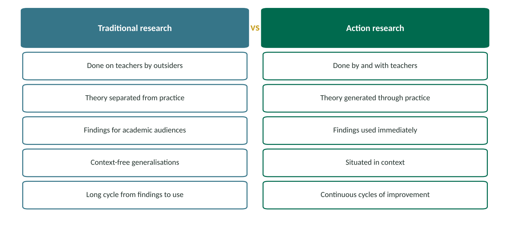</p>
<p><strong>Figure 1.</strong> <em>Why traditional research often fails
to change practice and how action research responds</em></p>
<div class="box box-critical"><div class="box-label">Critical Perspective</div>
<p>Carr and Kemmis's critique is influential but contested. Defenders of
large-scale research argue that systemic change requires generalisable
evidence (e.g., effects of class size or structured pedagogy), while
action research may lack rigour and generalisability. A sophisticated
view sees different traditions serving different purposes, and builds
<strong>research-practice partnerships</strong> connecting
them.</p></div>
<h2 id="critical-review-of-prevailing-educational-research-in-bangladesh">1.5
Critical review of prevailing educational research in Bangladesh</h2>
<p>Common limitations identified in reviews of Bangladeshi educational
research (to be examined with the course teacher's guidance):</p>
<ul>
<li><p>Over-reliance on descriptive surveys with self-report
questionnaires.</p></li>
<li><p>Weak theoretical framing and literature reviews.</p></li>
<li><p>Limited use of experimental, longitudinal, qualitative or mixed
designs.</p></li>
<li><p>Small, convenience samples and weak sampling
justification.</p></li>
<li><p>Inadequate reporting of validity and reliability.</p></li>
<li><p>Over-generalised recommendations not linked to findings.</p></li>
<li><p>Limited dissemination to teachers and policymakers; findings
rarely used.</p></li>
<li><p>Few studies initiated by practising teachers.</p></li>
</ul>
<div class="box box-tip"><div class="box-label">Study tip</div><p>Pick one recent M.Ed or M.Phil thesis or BANBEIS/NAEM study. Analyse its paradigm, design, sample, tools and the extent to which its findings could change practice, using the checklist in Unit 7. This makes critique concrete.</p></div>
<div class="box box-exam"><div class="box-label">Exam Focus</div>
<p>Likely questions: "Compare positivist, interpretive and
constructivist research paradigms." "Why have dominant research
paradigms failed to bring change in educational practice? Discuss with
reference to Carr and Kemmis." "Critically review the state of
educational research in Bangladesh."</p></div>
<h1 id="unit-2-action-research-paradigms">Unit 2: Action Research
Paradigms</h1><div aria-label="Tools for Unit 2: Action Research Paradigms" class="unit-tools" role="group"><button aria-label="Listen to Unit 2: Action Research Paradigms" class="tts-btn" data-target="unit-2-action-research-paradigms" data-tts="unit" type="button"><span aria-hidden="true">▶</span> Listen to this chapter</button><button aria-label="Listen to the summary of Unit 2: Action Research Paradigms" class="tts-btn" data-target="sum-unit-2-action-research-paradigms" data-tts="summary" type="button"><span aria-hidden="true">▶</span> Listen to summary</button><button class="done-btn" data-unit="unit-2-action-research-paradigms" type="button">Mark as studied</button></div><details class="unit-summary" id="sum-unit-2-action-research-paradigms"><summary>Chapter summary</summary><div class="sum-body"><p>Table 3. Types of action research (Grundy, 1982; Carr &amp; Kemmis, 1986)</p><p><strong>This chapter covers:</strong> Conceptual framework of action research; Characteristics, scope and rationale; Uses and limitations of action research; Teachers' role in the classroom: behind the scene; Teacher as researcher: political, professional and personal dimensions.</p><p><strong>Key terms:</strong></p><ul><li>Action research (Carr &amp; Kemmis, 1986): "A form of self-reflective enquiry undertaken by participants in social situations in order to improve the rationality and justice of their own practices, their understanding of these practices, and the situations in which the…</li><li>Action research (Elliott, 1991): "The study of a social situation with a view to improving the quality of action within it."</li><li>Action research (Mills, 2018): "Any systematic inquiry conducted by teacher researchers, principals, school counselors, or other stakeholders in the teaching/learning environment to gather information about how their particular schools operate, how they teach, and how well their students learn."</li></ul></div></details><details class="curriculum" open=""><summary><span class="cur-label">What the curriculum says</span><span class="cur-unit">Unit 2: Action Research Paradigms · 6 contact hours</span></summary><div class="cur-h">Learning outcomes</div><p class="cur-lead">At the end of this unit learners will be able to</p><ol type="a"><li>explain the need of action research in education</li><li>describe the rationale for action research</li><li>describe the role of teachers in action research in education</li></ol><div class="cur-h">Content</div><ul><li>Conceptual framework of action research</li><li>Characteristics, scope, and rationale of action research</li><li>Uses and limitations of action research</li><li>Teachers‘ role in classroom: behind the scene</li><li>Teacher as researcher: political, professional, personal</li></ul></details>
<h2 id="conceptual-framework-of-action-research">2.1 Conceptual
framework of action research</h2>
<div class="box box-def"><div class="box-label">Definition</div>
<p><strong>Action research (Carr &amp; Kemmis, 1986):</strong> "A form
of self-reflective enquiry undertaken by participants in social
situations in order to improve the rationality and justice of their own
practices, their understanding of these practices, and the situations in
which the practices are carried out."</p></div>
<div class="box box-def"><div class="box-label">Definition</div>
<p><strong>Action research (Elliott, 1991):</strong> "The study of a
social situation with a view to improving the quality of action within
it."</p></div>
<div class="box box-def"><div class="box-label">Definition</div>
<p><strong>Action research (Mills, 2018):</strong> "Any systematic
inquiry conducted by teacher researchers, principals, school counselors,
or other stakeholders in the teaching/learning environment to gather
information about how their particular schools operate, how they teach,
and how well their students learn."</p></div>
<p>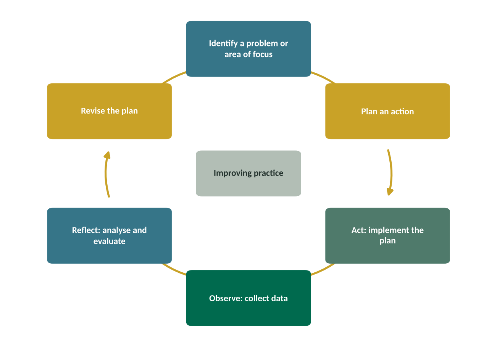</p>
<p><strong>Figure 2.</strong> <em>The basic action research
cycle</em></p>
<h3 id="types-of-action-research">Types of action research</h3>
<div class="table-wrap"><table>

<thead>
<tr class="header">
<th><strong>Type</strong></th>
<th><strong>Interest (Habermas)</strong></th>
<th><strong>Purpose</strong></th>
<th><strong>Facilitator role</strong></th>
</tr>
</thead>
<tbody>
<tr class="odd">
<td><strong>Technical</strong></td>
<td>Technical interest in control</td>
<td>Improve effectiveness of practice; test a predetermined
intervention</td>
<td>Outside expert directs</td>
</tr>
<tr class="even">
<td><strong>Practical</strong></td>
<td>Practical interest in understanding</td>
<td>Improve understanding and practitioners' professional judgement</td>
<td>Facilitator encourages reflection</td>
</tr>
<tr class="odd">
<td><strong>Emancipatory / critical</strong></td>
<td>Emancipatory interest in freedom</td>
<td>Transform practice and its conditions; challenge constraints and
injustice</td>
<td>Group takes collective responsibility</td>
</tr>
</tbody>
</table></div>
<p><strong>Table 3.</strong> <em>Types of action research (Grundy, 1982;
Carr &amp; Kemmis, 1986)</em></p>
<p>Other forms include <strong>individual teacher research</strong>,
<strong>collaborative action research</strong> (teams of teachers),
<strong>school-wide action research</strong>, <strong>district-wide
action research</strong> (Calhoun, 1994) and <strong>participatory
action research (PAR)</strong> (Fals-Borda, Freire, Kemmis).</p>
<h2 id="characteristics-scope-and-rationale">2.2 Characteristics, scope
and rationale</h2>
<p><strong>Characteristics:</strong></p>
<ul>
<li><p><strong>Practical and problem-focused:</strong> starts from a
real problem in practice.</p></li>
<li><p><strong>Cyclical / spiral:</strong> plan, act, observe, reflect,
repeated.</p></li>
<li><p><strong>Participatory and collaborative:</strong> practitioners
are researchers.</p></li>
<li><p><strong>Reflective:</strong> systematic reflection on
practice.</p></li>
<li><p><strong>Situational:</strong> findings apply to the specific
context.</p></li>
<li><p><strong>Change-oriented:</strong> aims at improvement, not only
knowledge.</p></li>
<li><p><strong>Emergent and flexible:</strong> plans evolve.</p></li>
<li><p><strong>Uses multiple data sources</strong> and both qualitative
and quantitative data.</p></li>
</ul>
<p><strong>Scope:</strong> teaching methods, classroom management,
assessment, curriculum adaptation, inclusion, student motivation,
school-community relations, professional development, leadership and
school improvement.</p>
<p><strong>Rationale:</strong> bridges theory and practice; empowers
teachers as knowledge creators; improves student learning in context;
develops reflective professionals (Schön, 1983); supports school-based
professional development; democratises knowledge production.</p>
<h2 id="uses-and-limitations-of-action-research">2.3 Uses and
limitations of action research</h2>
<div class="table-wrap"><table>

<thead>
<tr class="header">
<th><strong>Uses</strong></th>
<th><strong>Limitations</strong></th>
</tr>
</thead>
<tbody>
<tr class="odd">
<td><strong>Solving immediate classroom problems</strong></td>
<td>Limited generalisability beyond the context</td>
</tr>
<tr class="even">
<td><strong>Teacher professional development and reflective
practice</strong></td>
<td>Time and workload demands on teachers</td>
</tr>
<tr class="odd">
<td><strong>Curriculum development and evaluation</strong></td>
<td>Researcher bias when evaluating one's own practice</td>
</tr>
<tr class="even">
<td><strong>School improvement and collaborative culture</strong></td>
<td>Teachers may lack research skills; need support</td>
</tr>
<tr class="odd">
<td><strong>Empowering marginalised voices (PAR)</strong></td>
<td>Risk of being "unscientific" or poorly documented</td>
</tr>
<tr class="even">
<td><strong>Linking pre-service teacher education with
practice</strong></td>
<td>Ethical complexity: dual role of teacher and researcher</td>
</tr>
<tr class="odd">
<td><strong>Building local evidence for policy</strong></td>
<td>Institutional constraints, lack of recognition</td>
</tr>
</tbody>
</table></div>
<p><strong>Table 4.</strong> <em>Uses and limitations of action
research</em></p>
<h2 id="teachers-role-in-the-classroom-behind-the-scene">2.4 Teachers'
role in the classroom: behind the scene</h2>
<p>Behind every visible lesson lies invisible professional work:
planning, interpreting the curriculum, knowing learners, assessing and
giving feedback, reflecting, managing relationships and emotions, and
making hundreds of decisions (Jackson's <em>Life in Classrooms</em>,
1968, estimated around 1,000 interpersonal interactions a day for
elementary teachers). Action research makes this hidden work explicit
and systematic: teachers become aware of their <strong>tacit
knowledge</strong> (Polanyi), question routines, and gather evidence
about the effects of their decisions.</p>
<h2 id="teacher-as-researcher-political-professional-and-personal-dimensions">2.5
Teacher as researcher: political, professional and personal
dimensions</h2>
<p>Stenhouse (1975) argued that "it is not enough that teachers' work
should be studied: they need to study it themselves". Elliott, Kemmis
and others developed the political and professional dimensions.</p>
<p>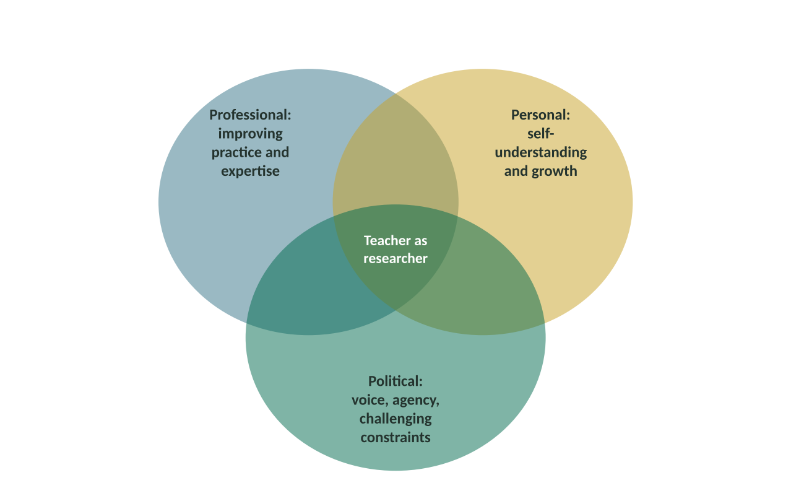</p>
<p><strong>Figure 3.</strong> <em>Three dimensions of teacher as
researcher</em></p>
<div class="table-wrap"><table>

<thead>
<tr class="header">
<th><strong>Dimension</strong></th>
<th><strong>Meaning</strong></th>
<th><strong>Example</strong></th>
</tr>
</thead>
<tbody>
<tr class="odd">
<td><strong>Political</strong></td>
<td>Teachers claim a voice in knowledge production and policy; challenge
top-down reforms and unjust structures</td>
<td>Teachers document the effects of large class sizes and present
evidence to the upazila education office</td>
</tr>
<tr class="even">
<td><strong>Professional</strong></td>
<td>Research as part of professional competence and accountability;
evidence-informed practice; career development</td>
<td>A teacher systematically tests strategies for improving English
speaking and shares results in a cluster meeting</td>
</tr>
<tr class="odd">
<td><strong>Personal</strong></td>
<td>Self-understanding, reflection on values and identity, personal
growth and satisfaction</td>
<td>A teacher examines her own gendered expectations of boys and girls
in science</td>
</tr>
</tbody>
</table></div>
<p><strong>Table 5.</strong> <em>Political, professional and personal
dimensions of the teacher-researcher</em></p>
<div class="box box-bd"><div class="box-label">Bangladesh Context</div>
<p>In Bangladesh, action research has been promoted in teacher education
(B.Ed, M.Ed, Diploma in Primary Education), by NAEM and through projects
(e.g., English in Action, subject-based trainings, BRAC IED). Begum and
colleagues (2002) argued for problem-based school research by teachers.
Barriers include heavy teaching loads, examination pressure,
hierarchical supervision, lack of recognition, and the perception that
research belongs to universities.</p></div>
<div class="box box-exam"><div class="box-label">Exam Focus</div>
<p>Expect: "Define action research and explain its characteristics."
"Distinguish technical, practical and emancipatory action research."
"Discuss the uses and limitations of action research." "Explain the
teacher as researcher in its political, professional and personal
dimensions."</p></div>
<h1 id="unit-3-trends-in-action-research">Unit 3: Trends in Action
Research</h1><div aria-label="Tools for Unit 3: Trends in Action Research" class="unit-tools" role="group"><button aria-label="Listen to Unit 3: Trends in Action Research" class="tts-btn" data-target="unit-3-trends-in-action-research" data-tts="unit" type="button"><span aria-hidden="true">▶</span> Listen to this chapter</button><button aria-label="Listen to the summary of Unit 3: Trends in Action Research" class="tts-btn" data-target="sum-unit-3-trends-in-action-research" data-tts="summary" type="button"><span aria-hidden="true">▶</span> Listen to summary</button><button class="done-btn" data-unit="unit-3-trends-in-action-research" type="button">Mark as studied</button></div><details class="unit-summary" id="sum-unit-3-trends-in-action-research"><summary>Chapter summary</summary><div class="sum-body"><p>Kurt Lewin (1890 to 1947), a German-American social psychologist, coined the term action research in his 1946 paper "Action research and minority problems". He described it as "a comparative research on the conditions and effects of various forms of social action and research leading to social action", proceeding in "a spiral of steps, each of…</p><p><strong>This chapter covers:</strong> The contribution of Kurt Lewin; Ideas and influence of Lawrence Stenhouse; Schemes of Stephen Kemmis and John Elliott; Jack Whitehead's notion of living educational theory; Diagnosing the problem and planning the research; Selecting an appropriate model; Practical concerns and implications; Participatory Rural Appraisal (PRA).</p><p><strong>Key terms:</strong></p><ul><li>Participatory Rural Appraisal (Chambers, 1994): "A growing family of approaches and methods to enable local (rural or urban) people to share, enhance, and analyze their knowledge of life and conditions, to plan and to act." It evolved from Rapid Rural…</li></ul></div></details><details class="curriculum" open=""><summary><span class="cur-label">What the curriculum says</span><span class="cur-unit">Unit 3: Trends in Action Research · 6 contact hours</span></summary><div class="cur-h">Learning outcomes</div><p class="cur-lead">At the end of this unit learners will be able to</p><ol type="a"><li>explain the current trend of action research</li><li>use different models of action research in designing action research</li></ol><div class="cur-h">Content</div><ul><li>The contribution of Kurt Lewin</li><li>Ideas and Influence of Lawrence steakhouse</li><li>Schemes of Stephen Kemmis and John Elliot</li><li>Notion of living educational theory of Jack Whitehead</li><li>Diagnosing the problem and planning the research</li><li>Selecting / delving appropriate model</li><li>Practical concerns and Implications</li><li>Participatory Rural Appraisal (PRA)</li></ul></details>
<h2 id="the-contribution-of-kurt-lewin">3.1 The contribution of Kurt
Lewin</h2>
<p>Kurt Lewin (1890 to 1947), a German-American social psychologist,
coined the term <strong>action research</strong> in his 1946 paper
"Action research and minority problems". He described it as "a
comparative research on the conditions and effects of various forms of
social action and research leading to social action", proceeding in "a
spiral of steps, each of which is composed of a circle of planning,
action, and fact-finding about the result of the action". He famously
stated that "research that produces nothing but books will not
suffice".</p>
<p>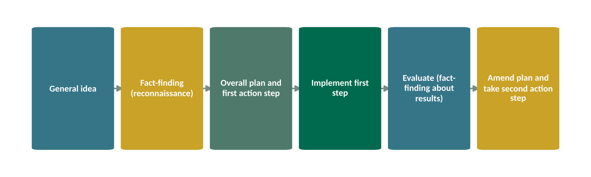</p>
<p><strong>Figure 4.</strong> <em>Lewin's (1946) spiral of action
research steps</em></p>
<p>Lewin also contributed <strong>field theory</strong>,
<strong>force-field analysis</strong> (driving and restraining forces
for change) and the <strong>three-step model of change</strong>
(unfreeze, change, refreeze), all widely used in planning educational
change.</p>
<p>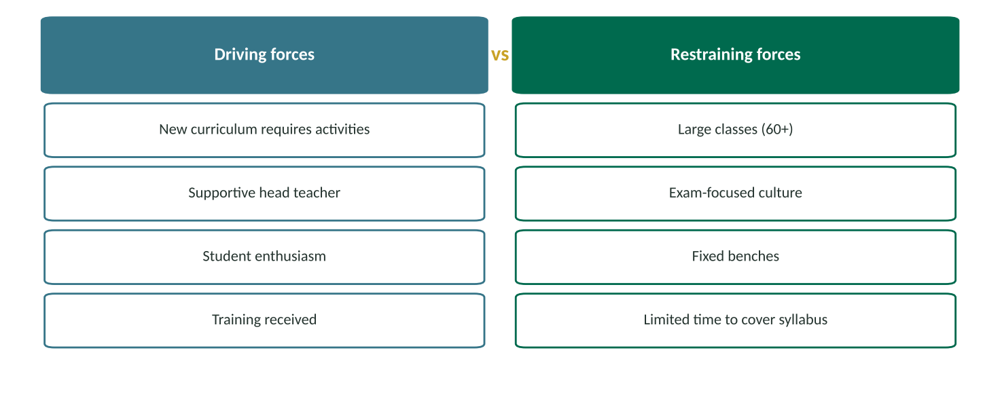</p>
<p><strong>Figure 5.</strong> <em>Lewin's force-field analysis applied
to introducing group work in a secondary school</em></p>
<p>Stephen Corey (1953) introduced action research into American
education at Teachers College, Columbia ("Action research to improve
school practices").</p>
<h2 id="ideas-and-influence-of-lawrence-stenhouse">3.2 Ideas and
influence of Lawrence Stenhouse</h2>
<p>(The syllabus spells his name "Lawrence steakhouse"; the correct name
is <strong>Lawrence Stenhouse</strong>, 1926 to 1982.)</p>
<p>Stenhouse, director of the <strong>Humanities Curriculum
Project</strong> (1967 to 1972) and founder of the Centre for Applied
Research in Education (CARE) at the University of East Anglia, revived
action research in Britain through the idea of the <strong>teacher as
researcher</strong>. Key ideas:</p>
<ul>
<li><p><strong>Curriculum as hypothesis:</strong> "A curriculum is an
attempt to communicate the essential principles and features of an
educational proposal in such a form that it is open to critical scrutiny
and capable of effective translation into practice." Each classroom is a
laboratory where the teacher tests curricular proposals.</p></li>
<li><p><strong>Process model of curriculum</strong> (in contrast to the
objectives model of Tyler), emphasising principles of
procedure.</p></li>
<li><p><strong>Extended professionalism:</strong> teachers' commitment
to systematic questioning of their own teaching, the skills to study it,
and the concern to question and test theory in practice.</p></li>
<li><p>Research as "systematic enquiry made public".</p></li>
</ul>
<h2 id="schemes-of-stephen-kemmis-and-john-elliott">3.3 Schemes of
Stephen Kemmis and John Elliott</h2>
<h3 id="kemmis-and-mctaggarts-action-research-spiral">Kemmis and
McTaggart's action research spiral</h3>
<p>Kemmis and McTaggart (1988; Kemmis, McTaggart &amp; Nixon, 2014)
represented action research as a <strong>self-reflective spiral</strong>
of cycles: <strong>plan, act and observe, reflect</strong>, then
<strong>revised plan</strong>, and so on. They emphasised
<strong>critical participatory action research</strong> that is
collective, aimed at changing practices, understandings and the
conditions of practice ("practice architectures").</p>
<p></p>
<p><strong>Figure 6.</strong> <em>Kemmis and McTaggart's self-reflective
spiral of action research</em></p>
<h3 id="john-elliotts-model">John Elliott's model</h3>
<p>Elliott (1991), working in the Ford Teaching Project, refined Lewin's
model, arguing that the "general idea" should be allowed to shift, that
<strong>reconnaissance</strong> should involve analysis as well as
fact-finding, and that implementation of action steps should be
monitored before evaluating effects.</p>
<p>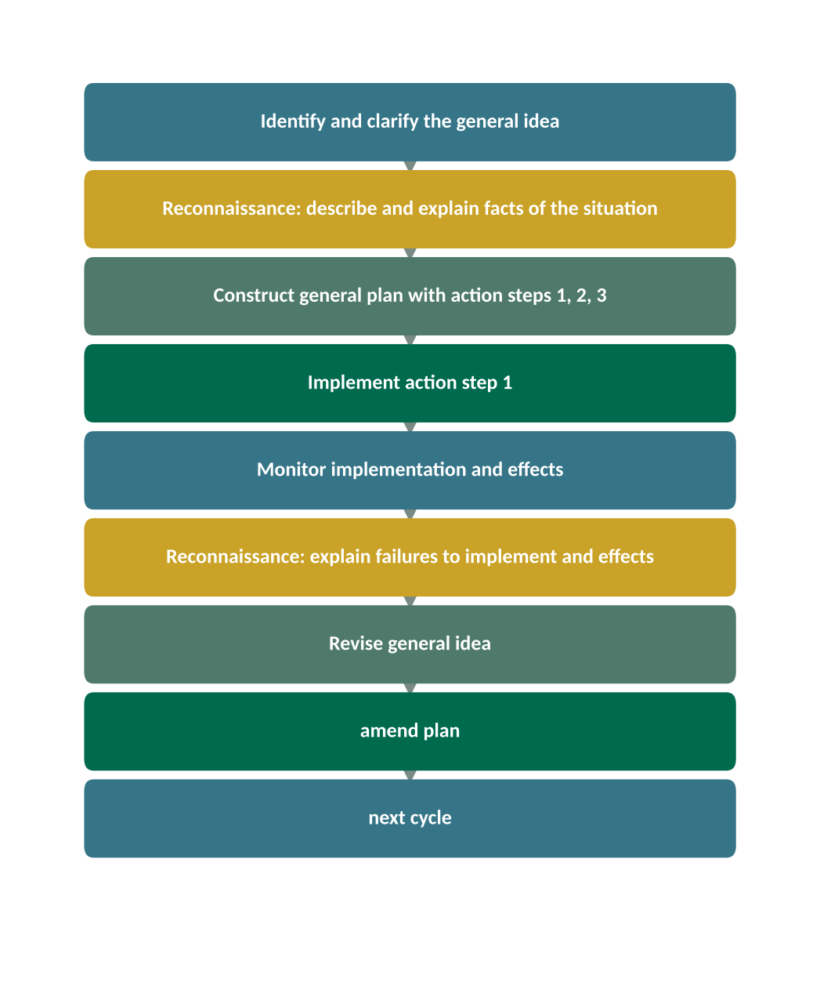</p>
<p><strong>Figure 7.</strong> <em>John Elliott's (1991) action research
model (simplified)</em></p>
<h2 id="jack-whiteheads-notion-of-living-educational-theory">3.4 Jack
Whitehead's notion of living educational theory</h2>
<p>Jack Whitehead (1989) proposed <strong>living educational
theory</strong>: the explanations that individual practitioners create
for their own educational influence in their own learning, in the
learning of others and in the social formations in which they live and
work. The central question is <strong>"How do I improve what I am
doing?"</strong> Practitioners experience themselves as "living
contradictions" when their values are denied in practice; action
research helps resolve this.</p>
<div class="table-wrap"><table>

<thead>
<tr class="header">
<th><strong>Step</strong></th>
<th><strong>Question</strong></th>
</tr>
</thead>
<tbody>
<tr class="odd">
<td><strong>1</strong></td>
<td>What is my concern?</td>
</tr>
<tr class="even">
<td><strong>2</strong></td>
<td>Why am I concerned? (values)</td>
</tr>
<tr class="odd">
<td><strong>3</strong></td>
<td>What experiences can I describe to show why I am concerned?</td>
</tr>
<tr class="even">
<td><strong>4</strong></td>
<td>What can I do about it? What will I do about it?</td>
</tr>
<tr class="odd">
<td><strong>5</strong></td>
<td>What kind of data will I gather to show the situation as it
unfolds?</td>
</tr>
<tr class="even">
<td><strong>6</strong></td>
<td>How will I explain my educational influences in learning?</td>
</tr>
<tr class="odd">
<td><strong>7</strong></td>
<td>How will I ensure that any conclusions I reach are reasonably fair
and accurate (validation)?</td>
</tr>
<tr class="even">
<td><strong>8</strong></td>
<td>How will I evaluate the evidence-based account of my learning?</td>
</tr>
<tr class="odd">
<td><strong>9</strong></td>
<td>How will I modify my concerns, ideas and practice in light of my
evaluation?</td>
</tr>
</tbody>
</table></div>
<p><strong>Table 6.</strong> <em>Whitehead's action-reflection cycle
(McNiff &amp; Whitehead, 2011)</em></p>
<h2 id="diagnosing-the-problem-and-planning-the-research">3.5 Diagnosing
the problem and planning the research</h2>
<p>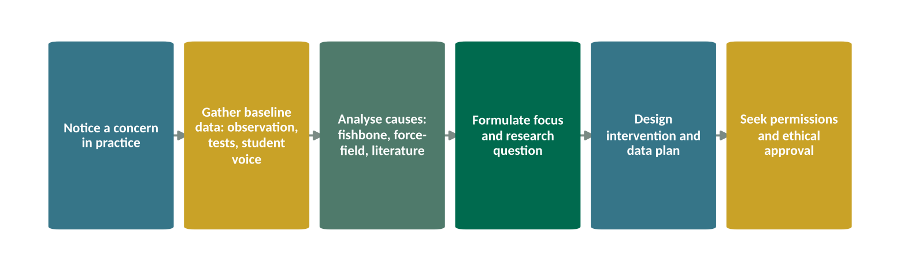</p>
<p><strong>Figure 8.</strong> <em>Diagnosing and planning an action
research project</em></p>
<p><strong>Writing an action research question:</strong> focus on your
own practice and its improvement, e.g., "How can I improve Grade 7
students' participation in English speaking activities through
think-pair-share?" or "To what extent does using local materials improve
Grade 4 students' understanding of fractions?"</p>
<h2 id="selecting-an-appropriate-model">3.6 Selecting an appropriate
model</h2>
<div class="table-wrap"><table>

<thead>
<tr class="header">
<th><strong>Model</strong></th>
<th><strong>Key features</strong></th>
<th><strong>Best suited for</strong></th>
</tr>
</thead>
<tbody>
<tr class="odd">
<td><strong>Lewin (1946)</strong></td>
<td>Spiral of planning, action, fact-finding</td>
<td>Introducing the logic of action research</td>
</tr>
<tr class="even">
<td><strong>Kemmis &amp; McTaggart (1988)</strong></td>
<td>Plan-act/observe-reflect spiral; critical, collective</td>
<td>Collaborative, critical projects</td>
</tr>
<tr class="odd">
<td><strong>Elliott (1991)</strong></td>
<td>Shifting general idea; detailed reconnaissance; monitoring</td>
<td>Complex projects where the problem is unclear</td>
</tr>
<tr class="even">
<td><strong>Whitehead / McNiff (living theory)</strong></td>
<td>Values-based "How do I improve...?"</td>
<td>Self-study and professional development</td>
</tr>
<tr class="odd">
<td><strong>Stringer (2014)</strong></td>
<td>Look, Think, Act</td>
<td>Community-based projects</td>
</tr>
<tr class="even">
<td><strong>Mills (2018) dialectic action research spiral</strong></td>
<td>Identify area of focus, collect data, analyse and interpret, develop
action plan</td>
<td>Teachers new to research</td>
</tr>
<tr class="odd">
<td><strong>Calhoun (1994)</strong></td>
<td>Select area, collect data, organise data, analyse and interpret,
take action</td>
<td>School-wide action research</td>
</tr>
</tbody>
</table></div>
<p><strong>Table 7.</strong> <em>Comparison of action research
models</em></p>
<h2 id="practical-concerns-and-implications">3.7 Practical concerns and
implications</h2>
<ul>
<li><p><strong>Time and workload:</strong> keep projects small and
integrated with teaching.</p></li>
<li><p><strong>Ethics:</strong> informed consent from students and
parents; avoid disadvantaging any group; confidentiality; the dual role
of teacher-researcher.</p></li>
<li><p><strong>Validity:</strong> triangulation, critical friends,
validation groups, audit trail.</p></li>
<li><p><strong>Support:</strong> head teacher's support; collaboration
with colleagues and university partners.</p></li>
<li><p><strong>Sharing:</strong> presenting results in staff meetings,
cluster trainings, journals and conferences.</p></li>
</ul>
<h2 id="participatory-rural-appraisal-pra">3.8 Participatory Rural
Appraisal (PRA)</h2>
<div class="box box-def"><div class="box-label">Definition</div>
<p><strong>Participatory Rural Appraisal (Chambers, 1994):</strong> "A
growing family of approaches and methods to enable local (rural or
urban) people to share, enhance, and analyze their knowledge of life and
conditions, to plan and to act." It evolved from Rapid Rural Appraisal
(RRA) in the 1980s and 1990s.</p></div>
<p><strong>Principles:</strong> handing over the stick (local people
lead); optimal ignorance and appropriate imprecision; triangulation;
learning from and with local people; self-critical awareness;
sharing.</p>
<div class="table-wrap"><table>

<thead>
<tr class="header">
<th><strong>Tool</strong></th>
<th><strong>Description</strong></th>
<th><strong>Educational use</strong></th>
</tr>
</thead>
<tbody>
<tr class="odd">
<td><strong>Social / resource mapping</strong></td>
<td>Community draws a map of households, resources, schools</td>
<td>Identify out-of-school children's households</td>
</tr>
<tr class="even">
<td><strong>Transect walk</strong></td>
<td>Systematic walk through the area with locals</td>
<td>Assess school routes and safety</td>
</tr>
<tr class="odd">
<td><strong>Seasonal calendar</strong></td>
<td>Annual pattern of work, income, disease, festivals</td>
<td>Plan school calendar around harvest and floods</td>
</tr>
<tr class="even">
<td><strong>Daily activity clock</strong></td>
<td>Daily routines of different groups</td>
<td>Understand girls' domestic workloads affecting attendance</td>
</tr>
<tr class="odd">
<td><strong>Venn (chapati) diagram</strong></td>
<td>Institutions and their importance and closeness</td>
<td>Map relationships between SMC, NGOs, union parishad and school</td>
</tr>
<tr class="even">
<td><strong>Problem tree / ranking</strong></td>
<td>Rank and analyse causes and effects of problems</td>
<td>Prioritise causes of dropout</td>
</tr>
<tr class="odd">
<td><strong>Timeline</strong></td>
<td>History of community events</td>
<td>Understand changes in education in the village</td>
</tr>
</tbody>
</table></div>
<p><strong>Table 8.</strong> <em>PRA tools and their educational
uses</em></p>
<div class="box box-bd"><div class="box-label">Bangladesh Context</div>
<p>PRA has been widely used in Bangladesh by NGOs (BRAC, Proshika, CARE)
for community development and in education for school mapping, community
participation in SLIP planning, and adult literacy programmes. It aligns
with Freire's dialogical approach.</p></div>
<div class="box box-exam"><div class="box-label">Exam Focus</div>
<p>Expect: "Discuss Kurt Lewin's contribution to action research."
"Explain Stenhouse's idea of the teacher as researcher and curriculum as
hypothesis." "Compare the action research models of Kemmis and McTaggart
and Elliott." "What is living educational theory?" "What is PRA?
Describe its tools and educational uses."</p></div>
<h1 id="unit-4-qualitative-research">Unit 4: Qualitative Research</h1><div aria-label="Tools for Unit 4: Qualitative Research" class="unit-tools" role="group"><button aria-label="Listen to Unit 4: Qualitative Research" class="tts-btn" data-target="unit-4-qualitative-research" data-tts="unit" type="button"><span aria-hidden="true">▶</span> Listen to this chapter</button><button aria-label="Listen to the summary of Unit 4: Qualitative Research" class="tts-btn" data-target="sum-unit-4-qualitative-research" data-tts="summary" type="button"><span aria-hidden="true">▶</span> Listen to summary</button><button class="done-btn" data-unit="unit-4-qualitative-research" type="button">Mark as studied</button></div><details class="unit-summary" id="sum-unit-4-qualitative-research"><summary>Chapter summary</summary><div class="sum-body"><p>Emergence: roots in anthropology (Malinowski's fieldwork), Chicago School sociology (1920s to 1930s), symbolic interactionism (Mead, Blumer), phenomenology (Husserl, Schutz) and hermeneutics. Denzin and Lincoln describe "moments" from the traditional period (1900 to 1950) through modernist, blurred genres, crisis of representation, postmodern, and post-experimental moments.</p><p><strong>This chapter covers:</strong> Concept and emergence of qualitative research; Role of qualitative research in researching education; Major themes of qualitative research; Critical analysis of the contribution of quantitative research in education; Rationale for qualitative research in education; Theoretical perspectives and approaches (research strategies); Types of qualitative research; Ethical issues in educational research.</p><p><strong>Key terms:</strong></p><ul><li>Qualitative research (Denzin &amp; Lincoln, 2018): "A situated activity that locates the observer in the world.</li><li>Qualitative research (Creswell &amp; Poth, 2018): Qualitative research begins with assumptions and interpretive frameworks that inform the study of problems addressing the meaning individuals or groups ascribe to a social or human problem, using an emerging approach, data collection in…</li></ul><p><strong>Key points to remember:</strong></p><ul><li>Key ethical codes include the Belmont Report (1979: respect for persons, beneficence, justice), the BERA Ethical Guidelines for Educational Research (5th ed., 2024), and the AERA Code of Ethics (2011).</li></ul></div></details><details class="curriculum" open=""><summary><span class="cur-label">What the curriculum says</span><span class="cur-unit">Unit 4: Qualitative research · 6 contact hours</span></summary><div class="cur-h">Learning outcomes</div><p class="cur-lead">At the end of this unit learners will be able to</p><ol type="a"><li>explain role of qualitative research in education</li><li>describe the types of qualitative research</li></ol><div class="cur-h">Content</div><ul><li>Concept of qualitative research and its emergence</li><li>Role of qualitative research for researching education</li><li>Major themes of qualitative research</li><li>Critical analysis of the contribution of quantitative research in education</li><li>Rationale of pursuing qualitative research in education</li><li>Theoretical perspective: Different approaches to qualitative research/Research strategies</li><li>Different types of qualitative research: case study, ethnography, phenomenology, grounded</li></ul><div class="cur-sub">theory</div><ul><li>Ethical issues for educational research</li></ul></details>
<h2 id="concept-and-emergence-of-qualitative-research">4.1 Concept and
emergence of qualitative research</h2>
<div class="box box-def"><div class="box-label">Definition</div>
<p><strong>Qualitative research (Denzin &amp; Lincoln, 2018):</strong>
"A situated activity that locates the observer in the world. It consists
of a set of interpretive, material practices that make the world
visible... qualitative researchers study things in their natural
settings, attempting to make sense of, or interpret, phenomena in terms
of the meanings people bring to them."</p></div>
<div class="box box-def"><div class="box-label">Definition</div>
<p><strong>Qualitative research (Creswell &amp; Poth, 2018):</strong>
Qualitative research begins with assumptions and interpretive frameworks
that inform the study of problems addressing the meaning individuals or
groups ascribe to a social or human problem, using an emerging approach,
data collection in natural settings sensitive to participants, and
inductive and deductive analysis that establishes patterns or
themes.</p></div>
<p><strong>Emergence:</strong> roots in anthropology (Malinowski's
fieldwork), Chicago School sociology (1920s to 1930s), symbolic
interactionism (Mead, Blumer), phenomenology (Husserl, Schutz) and
hermeneutics. Denzin and Lincoln describe "moments" from the traditional
period (1900 to 1950) through modernist, blurred genres, crisis of
representation, postmodern, and post-experimental moments. In education,
it grew from the 1970s with classroom ethnographies and illuminative
evaluation.</p>
<h2 id="role-of-qualitative-research-in-researching-education">4.2 Role
of qualitative research in researching education</h2>
<ul>
<li><p>Understanding how teaching and learning happen in real
classrooms.</p></li>
<li><p>Revealing participants' meanings, beliefs and experiences
(teachers, students, parents).</p></li>
<li><p>Explaining <strong>why</strong> and <strong>how</strong> policies
are interpreted and implemented.</p></li>
<li><p>Giving voice to marginalised groups (children with disabilities,
ethnic minorities, refugees).</p></li>
<li><p>Generating hypotheses and theories; developing
instruments.</p></li>
<li><p>Evaluating programmes in context (illuminative
evaluation).</p></li>
</ul>
<h2 id="major-themes-of-qualitative-research">4.3 Major themes of
qualitative research</h2>
<p>Patton (2015) identified key themes of qualitative inquiry grouped
into design, data collection and analysis strategies:</p>
<div class="table-wrap"><table>

<thead>
<tr class="header">
<th><strong>Group</strong></th>
<th><strong>Theme</strong></th>
<th><strong>Meaning</strong></th>
</tr>
</thead>
<tbody>
<tr class="odd">
<td><strong>Design</strong></td>
<td>Naturalistic inquiry</td>
<td>Study real-world settings without manipulation</td>
</tr>
<tr class="even">
<td><strong>Design</strong></td>
<td>Emergent design flexibility</td>
<td>Adapt inquiry as understanding deepens</td>
</tr>
<tr class="odd">
<td><strong>Design</strong></td>
<td>Purposeful sampling</td>
<td>Select information-rich cases</td>
</tr>
<tr class="even">
<td><strong>Data collection</strong></td>
<td>Qualitative data</td>
<td>Thick, detailed description; direct quotations</td>
</tr>
<tr class="odd">
<td><strong>Data collection</strong></td>
<td>Personal experience and engagement</td>
<td>Researcher has direct contact with people and situations</td>
</tr>
<tr class="even">
<td><strong>Data collection</strong></td>
<td>Empathic neutrality and mindfulness</td>
<td>Understanding without judgement</td>
</tr>
<tr class="odd">
<td><strong>Data collection</strong></td>
<td>Dynamic systems</td>
<td>Attention to process and change</td>
</tr>
<tr class="even">
<td><strong>Analysis</strong></td>
<td>Unique case orientation</td>
<td>Each case is special</td>
</tr>
<tr class="odd">
<td><strong>Analysis</strong></td>
<td>Inductive analysis and creative synthesis</td>
<td>Immersion in details to discover patterns</td>
</tr>
<tr class="even">
<td><strong>Analysis</strong></td>
<td>Holistic perspective</td>
<td>The whole phenomenon as a complex system</td>
</tr>
<tr class="odd">
<td><strong>Analysis</strong></td>
<td>Context sensitivity</td>
<td>Findings placed in social, historical, temporal context</td>
</tr>
<tr class="even">
<td><strong>Analysis</strong></td>
<td>Voice, perspective and reflexivity</td>
<td>Researcher owns and reflects on their voice</td>
</tr>
</tbody>
</table></div>
<p><strong>Table 9.</strong> <em>Major themes of qualitative inquiry
(after Patton, 2015)</em></p>
<h2 id="critical-analysis-of-the-contribution-of-quantitative-research-in-education">4.4
Critical analysis of the contribution of quantitative research in
education</h2>
<p><strong>Contributions:</strong> generalisable evidence on achievement
gaps, effectiveness of interventions (e.g., meta-analyses such as
Hattie's <em>Visible Learning</em>), test development, large-scale
monitoring, programme evaluation (RCTs on stipends, teacher training),
efficiency and cost-effectiveness analyses.</p>
<p><strong>Limitations:</strong> reduces complex educational phenomena
to variables; neglects context and meaning; may treat participants as
objects; measurement validity issues (attitude scales, self-reports);
"black box" problem (shows <em>whether</em> something works, not
<em>how</em> or <em>why</em>); limited usefulness for individual
teachers; potential to reinforce performativity and narrow
accountability.</p>
<h2 id="rationale-for-qualitative-research-in-education">4.5 Rationale
for qualitative research in education</h2>
<p>Education is a human, social and moral practice embedded in culture.
Qualitative research is needed when: the phenomenon is complex and
poorly understood; context matters; we need to understand processes and
meanings; the voices of participants are missing; quantitative findings
require explanation; or theory needs to be developed.</p>
<h2 id="theoretical-perspectives-and-approaches-research-strategies">4.6
Theoretical perspectives and approaches (research strategies)</h2>
<p>Interpretive frameworks used in qualitative research (Creswell &amp;
Poth, 2018) include <strong>social constructivism</strong>,
<strong>transformative frameworks</strong>, <strong>postmodern
perspectives</strong>, <strong>pragmatism</strong>, <strong>feminist
theories</strong>, <strong>critical theory and critical race
theory</strong>, <strong>queer theory</strong> and <strong>disability
theories</strong>. Approaches include symbolic interactionism,
ethnomethodology, hermeneutics and narrative inquiry.</p>
<h2 id="types-of-qualitative-research">4.7 Types of qualitative
research</h2>
<div class="table-wrap"><table>

<thead>
<tr class="header">
<th><strong>Design</strong></th>
<th><strong>Focus</strong></th>
<th><strong>Key thinkers</strong></th>
<th><strong>Data collection</strong></th>
<th><strong>Analysis</strong></th>
<th><strong>Product</strong></th>
<th><strong>Education example</strong></th>
</tr>
</thead>
<tbody>
<tr class="odd">
<td><strong>Case study</strong></td>
<td>In-depth description and analysis of a bounded case (or cases)</td>
<td>Stake (1995); Yin (2018); Merriam</td>
<td>Multiple sources: interviews, observation, documents, artefacts</td>
<td>Description of case and themes; within-case and cross-case
analysis</td>
<td>Detailed case analysis</td>
<td>How one rural school achieved high SSC results</td>
</tr>
<tr class="even">
<td><strong>Ethnography</strong></td>
<td>Shared patterns of a culture-sharing group</td>
<td>Malinowski; Wolcott; Spradley; Fetterman</td>
<td>Prolonged participant observation, interviews, artefacts</td>
<td>Description of culture, analysis of themes, interpretation</td>
<td>Cultural portrait</td>
<td>Culture of a hostel at a public university</td>
</tr>
<tr class="odd">
<td><strong>Phenomenology</strong></td>
<td>Essence of lived experience of a phenomenon</td>
<td>Husserl; Moustakas (1994); van Manen; IPA (Smith)</td>
<td>In-depth interviews with 5 to 25 people who experienced the
phenomenon</td>
<td>Bracketing (epoché), significant statements, meaning units, textural
and structural description, essence</td>
<td>Description of the essence</td>
<td>Lived experience of first-year female engineering students</td>
</tr>
<tr class="even">
<td><strong>Grounded theory</strong></td>
<td>Generate a theory grounded in data</td>
<td>Glaser &amp; Strauss (1967); Strauss &amp; Corbin; Charmaz
(constructivist)</td>
<td>Interviews with 20 to 60 people; theoretical sampling</td>
<td>Open, axial and selective coding; constant comparison; memos</td>
<td>Theory or model</td>
<td>How novice teachers develop classroom management strategies</td>
</tr>
<tr class="odd">
<td><strong>Narrative</strong></td>
<td>Life stories of individuals</td>
<td>Clandinin &amp; Connelly (2000)</td>
<td>Stories, interviews, documents</td>
<td>Restorying; chronology; themes</td>
<td>Narrative of a life</td>
<td>Life history of a woman madrasah principal</td>
</tr>
</tbody>
</table></div>
<p><strong>Table 10.</strong> <em>Major qualitative research designs
(Creswell &amp; Poth, 2018)</em></p>
<p>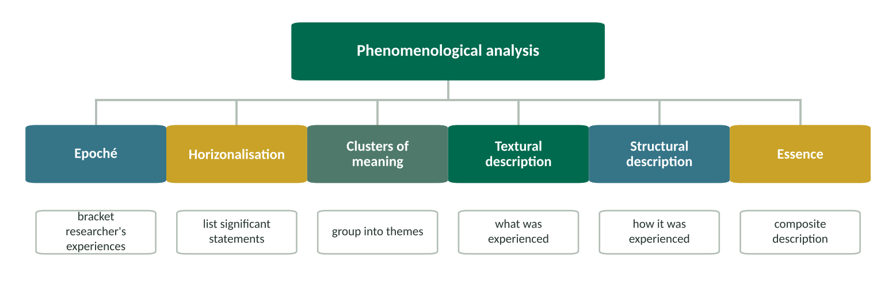</p>
<p><strong>Figure 9.</strong> <em>Phenomenological analysis steps
(Moustakas, 1994; simplified)</em></p>
<p>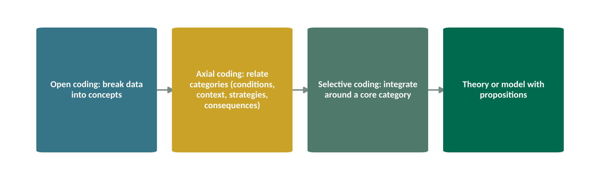</p>
<p><strong>Figure 10.</strong> <em>Coding in grounded theory (Strauss
&amp; Corbin)</em></p>
<h2 id="ethical-issues-in-educational-research">4.8 Ethical issues in
educational research</h2>
<div class="table-wrap"><table>

<thead>
<tr class="header">
<th><strong>Principle</strong></th>
<th><strong>Application</strong></th>
</tr>
</thead>
<tbody>
<tr class="odd">
<td><strong>Informed consent</strong></td>
<td>Explain purpose, procedures, risks and rights in understandable
language; written or oral consent; parental consent and child assent for
minors</td>
</tr>
<tr class="even">
<td><strong>Voluntary participation and right to withdraw</strong></td>
<td>No coercion, especially by teachers over their own students</td>
</tr>
<tr class="odd">
<td><strong>Confidentiality and anonymity</strong></td>
<td>Pseudonyms; secure data storage; careful reporting in small
communities</td>
</tr>
<tr class="even">
<td><strong>Do no harm (non-maleficence)</strong></td>
<td>Avoid psychological distress; provide support referrals; care with
sensitive topics</td>
</tr>
<tr class="odd">
<td><strong>Beneficence and justice</strong></td>
<td>Fair selection; benefits to participants and communities; avoid
exploitation</td>
</tr>
<tr class="even">
<td><strong>Honesty and integrity</strong></td>
<td>Accurate reporting; no fabrication, falsification or plagiarism</td>
</tr>
<tr class="odd">
<td><strong>Researcher positionality</strong></td>
<td>Reflexivity about power relations (teacher-student,
outsider-insider)</td>
</tr>
<tr class="even">
<td><strong>Ethical approval</strong></td>
<td>Institutional review / ethics committee approval; gatekeeper
permissions (head teacher, education office)</td>
</tr>
<tr class="odd">
<td><strong>Data ownership and sharing</strong></td>
<td>Agreements on use of data and images; return findings to
participants</td>
</tr>
</tbody>
</table></div>
<p><strong>Table 11.</strong> <em>Ethical principles and their
application in educational research</em></p>
<div class="box box-key"><div class="box-label">Key Point</div>
<p>Key ethical codes include the <strong>Belmont Report</strong> (1979:
respect for persons, beneficence, justice), the <strong>BERA Ethical
Guidelines for Educational Research</strong> (5th ed., 2024), and the
<strong>AERA Code of Ethics</strong> (2011). Qualitative and action
research raise special issues of <strong>dual roles</strong>,
<strong>emergent consent</strong> (process consent) and
<strong>anonymity in small settings</strong>.</p></div>
<div class="box box-exam"><div class="box-label">Exam Focus</div>
<p>Expect: "Define qualitative research and trace its emergence."
"Discuss the role and rationale of qualitative research in education."
"Compare case study, ethnography, phenomenology and grounded theory."
"Discuss ethical issues in educational research."</p></div>
<h1 id="unit-5-data-collection-and-making-sense-of-data-in-qualitative-research">Unit
5: Data Collection and Making Sense of Data in Qualitative Research</h1><div aria-label="Tools for Unit 5: Data Collection and Making Sense of Data in Qualitative Research" class="unit-tools" role="group"><button aria-label="Listen to Unit 5: Data Collection and Making Sense of Data in Qualitative Research" class="tts-btn" data-target="unit-5-data-collection-and-making-sense-of-data-in-qualitative-research" data-tts="unit" type="button"><span aria-hidden="true">▶</span> Listen to this chapter</button><button aria-label="Listen to the summary of Unit 5: Data Collection and Making Sense of Data in Qualitative Research" class="tts-btn" data-target="sum-unit-5-data-collection-and-making-sense-of-data-in-qualitative-research" data-tts="summary" type="button"><span aria-hidden="true">▶</span> Listen to summary</button><button class="done-btn" data-unit="unit-5-data-collection-and-making-sense-of-data-in-qualitative-research" type="button">Mark as studied</button></div><details class="unit-summary" id="sum-unit-5-data-collection-and-making-sense-of-data-in-qualitative-research"><summary>Chapter summary</summary><div class="sum-body"><p>Table 14. Example data collection matrix for an action research project</p><p><strong>This chapter covers:</strong> Data collection techniques; Procedure for using instruments and their role; Validity and reliability of qualitative data: triangulation; Content analysis, thematic analysis and interim analysis; Interpreting findings in action research and qualitative research.</p><p><strong>Key terms:</strong></p><ul><li>Content analysis (Krippendorff, 2019): "A research technique for making replicable and valid inferences from texts (or other meaningful matter) to the contexts of their use." It can be quantitative (counting categories) or qualitative (interpreting meaning).</li><li>Thematic analysis (Braun &amp; Clarke, 2006): "A method for identifying, analysing and reporting patterns (themes) within data." Braun and Clarke (2019, 2022) now call their approach reflexive thematic analysis , emphasising the researcher's active role in generating themes.</li></ul><p><strong>Key points to remember:</strong></p><ul><li>A good qualitative interpretation is plausible , grounded in data (quotations), theoretically informed , reflexive and useful .</li></ul></div></details><details class="curriculum" open=""><summary><span class="cur-label">What the curriculum says</span><span class="cur-unit">Unit 5: Data Collection and Making Sense of Data in qualitative research · 6 contact hours</span></summary><div class="cur-h">Learning outcomes</div><p class="cur-lead">At the end of this unit learners will be able to</p><ol type="a"><li>identify different techniques for collecting data</li><li>develop data collection techniques in their research</li><li>interpret data with appropriate procedures</li></ol><div class="cur-h">Content</div><ul><li>Data collection:Interview, observation, field note, focus group discussion, reflective journals, audio and video data, documentary evidence, learners‘ diary etc.</li><li>Procedure of using different instruments and their role</li><li>Validity and reliability of data: triangulation</li><li>Content analysis; thematic analysis; interim analysis</li><li>Interpreting findings in action research and qualitative research</li></ul></details>
<h2 id="data-collection-techniques">5.1 Data collection techniques</h2>
<div class="table-wrap"><table>

<thead>
<tr class="header">
<th><strong>Technique</strong></th>
<th><strong>Description</strong></th>
<th><strong>Role in research</strong></th>
<th><strong>Practical tips</strong></th>
</tr>
</thead>
<tbody>
<tr class="odd">
<td><strong>Interview</strong></td>
<td>Semi-structured or unstructured conversation</td>
<td>Access meanings, beliefs, experiences</td>
<td>Use open questions, probes; record and transcribe</td>
</tr>
<tr class="even">
<td><strong>Observation</strong></td>
<td>Watching and recording behaviour in natural settings</td>
<td>Capture actual practice</td>
<td>Use observation protocol; note descriptive and reflective notes</td>
</tr>
<tr class="odd">
<td><strong>Field notes</strong></td>
<td>Researcher's written records during/after fieldwork</td>
<td>Preserve detail and context</td>
<td>Write as soon as possible; separate description from
interpretation</td>
</tr>
<tr class="even">
<td><strong>Focus group discussion</strong></td>
<td>Moderated group discussion</td>
<td>Collective views, norms, interaction</td>
<td>6 to 10 participants; homogeneous groups</td>
</tr>
<tr class="odd">
<td><strong>Reflective journals</strong></td>
<td>Researcher's or teacher's ongoing reflections</td>
<td>Document thinking, decisions, reflexivity</td>
<td>Write regularly; date entries; include feelings and questions</td>
</tr>
<tr class="even">
<td><strong>Audio and video data</strong></td>
<td>Recordings of lessons, interviews, events</td>
<td>Detailed, revisitable evidence</td>
<td>Obtain consent; consider ethics of images of children</td>
</tr>
<tr class="odd">
<td><strong>Documentary evidence</strong></td>
<td>Policies, lesson plans, minutes, textbooks, student work</td>
<td>Context, triangulation, historical evidence</td>
<td>Assess authenticity and credibility</td>
</tr>
<tr class="even">
<td><strong>Learners' diaries</strong></td>
<td>Students' written or drawn accounts</td>
<td>Learners' perspectives over time</td>
<td>Provide prompts; respect privacy</td>
</tr>
<tr class="odd">
<td><strong>Photo-voice and artefacts</strong></td>
<td>Participants' photographs, drawings</td>
<td>Visual and participatory data</td>
<td>Useful with children and low-literacy groups</td>
</tr>
</tbody>
</table></div>
<p><strong>Table 12.</strong> <em>Qualitative data collection
techniques</em></p>
<h3 id="field-note-template">Field note template</h3>
<div class="table-wrap"><table>

<thead>
<tr class="header">
<th><strong>Date / time / setting</strong></th>
<th><strong>Descriptive notes (what happened)</strong></th>
<th><strong>Reflective notes (researcher's thoughts)</strong></th>
</tr>
</thead>
<tbody>
<tr class="odd">
<td><strong>12 March, 10:00, Grade 6 English, School A</strong></td>
<td>Teacher writes 10 new words on board; 52 students copy them
silently; 3 students asked questions, all boys at front benches</td>
<td>Is participation gendered by seating? Follow up with a seating map
and interview with teacher</td>
</tr>
</tbody>
</table></div>
<p><strong>Table 13.</strong> <em>Sample field note format</em></p>
<h2 id="procedure-for-using-instruments-and-their-role">5.2 Procedure
for using instruments and their role</h2>
<blockquote class="mcq-options">
<p><strong>1.</strong> Align each instrument with research questions
(data collection matrix).</p>
<p><strong>2.</strong> Develop protocols (interview guide, observation
schedule, FGD route).</p>
<p><strong>3.</strong> Pilot and revise.</p>
<p><strong>4.</strong> Obtain permissions and consent.</p>
<p><strong>5.</strong> Collect data systematically, keeping records and
memos.</p>
<p><strong>6.</strong> Manage data: transcription, file naming, secure
storage, data logs.</p>
<p><strong>7.</strong> Begin analysis during collection (interim
analysis).</p>
</blockquote>
<div class="table-wrap"><table>

<thead>
<tr class="header">
<th><strong>Research question</strong></th>
<th><strong>Interview</strong></th>
<th><strong>Observation</strong></th>
<th><strong>Student journals</strong></th>
<th><strong>Test scores</strong></th>
<th><strong>Documents</strong></th>
</tr>
</thead>
<tbody>
<tr class="odd">
<td><strong>How do students respond to think-pair-share?</strong></td>
<td>✓</td>
<td>✓</td>
<td>✓</td>
<td></td>
<td></td>
</tr>
<tr class="even">
<td><strong>Does speaking performance improve?</strong></td>
<td></td>
<td>✓</td>
<td></td>
<td>✓</td>
<td></td>
</tr>
<tr class="odd">
<td><strong>What constraints affect implementation?</strong></td>
<td>✓</td>
<td>✓</td>
<td></td>
<td></td>
<td>✓</td>
</tr>
</tbody>
</table></div>
<p><strong>Table 14.</strong> <em>Example data collection matrix for an
action research project</em></p>
<h2 id="validity-and-reliability-of-qualitative-data-triangulation">5.3
Validity and reliability of qualitative data: triangulation</h2>
<p><strong>Triangulation</strong> uses multiple perspectives to
cross-check and deepen findings. Denzin (1978) identified four
types:</p>
<p>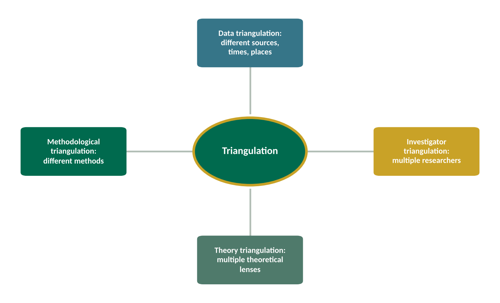</p>
<p><strong>Figure 11.</strong> <em>Denzin's (1978) four types of
triangulation</em></p>
<p>Other strategies (see also Lincoln &amp; Guba's trustworthiness in ED
504): member checking, peer debriefing, prolonged engagement, thick
description, negative case analysis, audit trail, reflexive journal,
critical friends and validation groups (in action research).</p>
<h2 id="content-analysis-thematic-analysis-and-interim-analysis">5.4
Content analysis, thematic analysis and interim analysis</h2>
<h3 id="content-analysis">Content analysis</h3>
<div class="box box-def"><div class="box-label">Definition</div>
<p><strong>Content analysis (Krippendorff, 2019):</strong> "A research
technique for making replicable and valid inferences from texts (or
other meaningful matter) to the contexts of their use." It can be
quantitative (counting categories) or qualitative (interpreting
meaning).</p></div>
<p>Hsieh and Shannon (2005) distinguish <strong>conventional</strong>
(categories derived from data), <strong>directed</strong> (categories
from theory) and <strong>summative</strong> (counting keywords then
interpreting) content analysis. Example: analysing gender representation
in NCTB textbooks by counting male and female characters and roles.</p>
<h3 id="thematic-analysis">Thematic analysis</h3>
<div class="box box-def"><div class="box-label">Definition</div>
<p><strong>Thematic analysis (Braun &amp; Clarke, 2006):</strong> "A
method for identifying, analysing and reporting patterns (themes) within
data." Braun and Clarke (2019, 2022) now call their approach
<strong>reflexive thematic analysis</strong>, emphasising the
researcher's active role in generating themes.</p></div>
<p>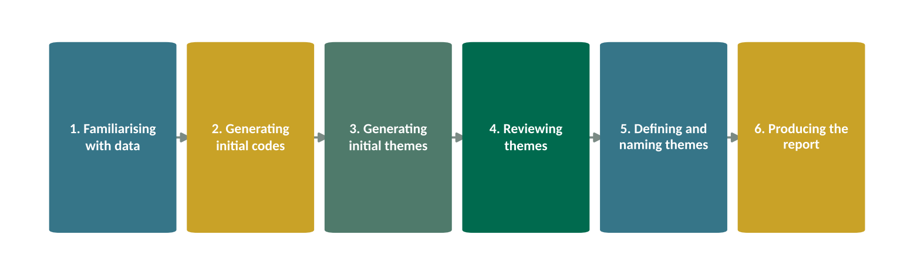</p>
<p><strong>Figure 12.</strong> <em>Braun and Clarke's six phases of
thematic analysis</em></p>
<div class="table-wrap"><table>

<thead>
<tr class="header">
<th><strong>Data extract</strong></th>
<th><strong>Initial code</strong></th>
<th><strong>Theme</strong></th>
</tr>
</thead>
<tbody>
<tr class="odd">
<td><strong>"I have to keep records for 60 students in 6 subjects; it
takes my evenings."</strong></td>
<td>Record-keeping burden</td>
<td>Assessment as paperwork</td>
</tr>
<tr class="even">
<td><strong>"Parents ask: where are the marks? They don't trust the new
symbols."</strong></td>
<td>Parental distrust</td>
<td>Legitimacy crisis of new assessment</td>
</tr>
<tr class="odd">
<td><strong>"When I give feedback, weak students try again. That is new
for me."</strong></td>
<td>Feedback motivates</td>
<td>Glimpses of assessment for learning</td>
</tr>
</tbody>
</table></div>
<p><strong>Table 15.</strong> <em>Thematic analysis illustration
(teachers' experiences of continuous assessment)</em></p>
<h3 id="interim-analysis">Interim analysis</h3>
<p><strong>Interim analysis</strong> is the cyclical process of
collecting and analysing data during a single study, so that early
analysis guides further data collection (Johnson &amp; Christensen,
2014). Miles, Huberman and Saldaña (2014) describe analysis as three
concurrent flows: <strong>data condensation</strong>, <strong>data
display</strong> (matrices, networks) and <strong>conclusion
drawing/verification</strong>.</p>
<p>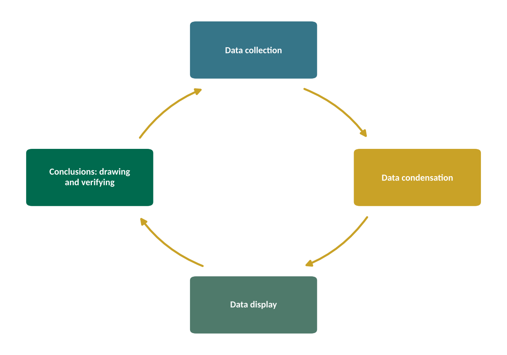</p>
<p><strong>Figure 13.</strong> <em>Miles, Huberman and Saldaña's
interactive model of data analysis</em></p>
<h2 id="interpreting-findings-in-action-research-and-qualitative-research">5.5
Interpreting findings in action research and qualitative research</h2>
<p>In <strong>action research</strong>, interpretation asks: What
changed? For whom? Why? What evidence shows improvement? What unintended
consequences occurred? What did I learn about my practice and values?
What next cycle is needed? Evidence is validated with critical friends
and participants.</p>
<p>In <strong>qualitative research</strong>, interpretation links themes
to the research questions, theory and literature; shows how themes
relate to each other (e.g., a thematic map or model); acknowledges
alternative interpretations and negative cases; and discusses
transferability.</p>
<div class="box box-key"><div class="box-label">Key Point</div>
<p>A good qualitative interpretation is <strong>plausible</strong>,
<strong>grounded in data</strong> (quotations), <strong>theoretically
informed</strong>, <strong>reflexive</strong> and
<strong>useful</strong>. Avoid simply listing themes; explain their
significance.</p></div>
<div class="box box-exam"><div class="box-label">Exam Focus</div>
<p>Expect: "Describe the techniques of qualitative data collection."
"What is triangulation? Explain its types." "Explain Braun and Clarke's
six phases of thematic analysis." "Distinguish content analysis and
thematic analysis." "How are findings interpreted in action
research?"</p></div>
<h1 id="unit-6-mixed-method-approach-in-educational-research">Unit 6:
Mixed Method Approach in Educational Research</h1><div aria-label="Tools for Unit 6: Mixed Method Approach in Educational Research" class="unit-tools" role="group"><button aria-label="Listen to Unit 6: Mixed Method Approach in Educational Research" class="tts-btn" data-target="unit-6-mixed-method-approach-in-educational-research" data-tts="unit" type="button"><span aria-hidden="true">▶</span> Listen to this chapter</button><button aria-label="Listen to the summary of Unit 6: Mixed Method Approach in Educational Research" class="tts-btn" data-target="sum-unit-6-mixed-method-approach-in-educational-research" data-tts="summary" type="button"><span aria-hidden="true">▶</span> Listen to summary</button><button class="done-btn" data-unit="unit-6-mixed-method-approach-in-educational-research" type="button">Mark as studied</button></div><details class="unit-summary" id="sum-unit-6-mixed-method-approach-in-educational-research"><summary>Chapter summary</summary><div class="sum-body"><p>Table 16. Milestones in the development of mixed methods research</p><p><strong>This chapter covers:</strong> Concept and inception; Role and importance in education; Types of mixed methods designs; Key characteristics of mixed methods design; How to design and what to consider; Sampling techniques in mixed methods design; Techniques to use different tools together and combine data.</p><p><strong>Key terms:</strong></p><ul><li>Mixed methods research (Johnson, Onwuegbuzie &amp; Turner, 2007): "The type of research in which a researcher or team of researchers combines elements of qualitative and quantitative research approaches (e.g., use of qualitative and quantitative viewpoints, data collection, analysis, inference techniques)…</li><li>Mixed methods research (Creswell &amp; Plano Clark, 2018): An approach in which the researcher collects and analyses both qualitative and quantitative data rigorously in response to research questions, integrates the two forms of data and their results, organises these procedures…</li></ul></div></details><details class="curriculum" open=""><summary><span class="cur-label">What the curriculum says</span><span class="cur-unit">Unit 6: Mixed Method Approach in Educational Research · 6 contact hours</span></summary><div class="cur-h">Learning outcomes</div><p class="cur-lead">At the end of this unit learners will be able to</p><ol type="a"><li>explain the concept and significance of mixed method research in education</li><li>design mixed method research in education following the types</li></ol><div class="cur-h">Content</div><ul><li>Concept and inception of Mixed method approach for researching education</li><li>It‘s role and importance in education</li><li>Types of mixed method research approach</li><li>Key characteristics of mixed method design</li><li>How to design, what to consider in Mixed method approach</li><li>Steps to conduct research through Mixed method design</li><li>Sampling techniques in Mixed method design</li><li>Techniques to use different tools together in Mixed method design</li><li>Combining qualitative and quantitative date in one research</li></ul></details>
<h2 id="concept-and-inception">6.1 Concept and inception</h2>
<div class="box box-def"><div class="box-label">Definition</div>
<p><strong>Mixed methods research (Johnson, Onwuegbuzie &amp; Turner,
2007):</strong> "The type of research in which a researcher or team of
researchers combines elements of qualitative and quantitative research
approaches (e.g., use of qualitative and quantitative viewpoints, data
collection, analysis, inference techniques) for the broad purposes of
breadth and depth of understanding and corroboration."</p></div>
<div class="box box-def"><div class="box-label">Definition</div>
<p><strong>Mixed methods research (Creswell &amp; Plano Clark,
2018):</strong> An approach in which the researcher collects and
analyses both qualitative and quantitative data rigorously in response
to research questions, <strong>integrates</strong> the two forms of data
and their results, organises these procedures into specific designs, and
frames them within theory and philosophy.</p></div>
<p><strong>Inception and development:</strong></p>
<div class="table-wrap"><table>

<thead>
<tr class="header">
<th><strong>Period</strong></th>
<th><strong>Milestone</strong></th>
</tr>
</thead>
<tbody>
<tr class="odd">
<td><strong>1959</strong></td>
<td>Campbell and Fiske's multitrait-multimethod matrix: using multiple
methods for validity</td>
</tr>
<tr class="even">
<td><strong>1978</strong></td>
<td>Denzin's concept of methodological triangulation</td>
</tr>
<tr class="odd">
<td><strong>1980s</strong></td>
<td>Paradigm wars; arguments for compatibility (Reichardt &amp; Cook,
1979; Howe, 1988)</td>
</tr>
<tr class="even">
<td><strong>1989</strong></td>
<td>Greene, Caracelli and Graham's five purposes of mixed methods
evaluation</td>
</tr>
<tr class="odd">
<td><strong>1990s to 2000s</strong></td>
<td>Formal design typologies (Morse, 1991 notation; Tashakkori &amp;
Teddlie, 1998, 2003 <em>Handbook</em>)</td>
</tr>
<tr class="even">
<td><strong>2007</strong></td>
<td><em>Journal of Mixed Methods Research</em> launched</td>
</tr>
<tr class="odd">
<td><strong>2010s onwards</strong></td>
<td>Mixed Methods International Research Association (2013);
integration, joint displays, complex designs</td>
</tr>
</tbody>
</table></div>
<p><strong>Table 16.</strong> <em>Milestones in the development of mixed
methods research</em></p>
<h2 id="role-and-importance-in-education">6.2 Role and importance in
education</h2>
<ul>
<li><p>Educational problems are complex and multi-level; one method is
rarely sufficient.</p></li>
<li><p>Combines generalisability (QUAN) with depth and context
(QUAL).</p></li>
<li><p>Explains statistical results with participants' voices.</p></li>
<li><p>Develops and validates instruments grounded in context.</p></li>
<li><p>Evaluates programmes: whether they work and how/why.</p></li>
<li><p>Useful for policy audiences who value both numbers and
stories.</p></li>
</ul>
<p>Greene, Caracelli and Graham (1989) identified five purposes:</p>
<div class="table-wrap"><table>

<thead>
<tr class="header">
<th><strong>Purpose</strong></th>
<th><strong>Meaning</strong></th>
</tr>
</thead>
<tbody>
<tr class="odd">
<td><strong>Triangulation</strong></td>
<td>Seek convergence and corroboration of results from different
methods</td>
</tr>
<tr class="even">
<td><strong>Complementarity</strong></td>
<td>Seek elaboration, enhancement or clarification of results from one
method with another</td>
</tr>
<tr class="odd">
<td><strong>Development</strong></td>
<td>Use results of one method to develop or inform the other (sampling,
instruments)</td>
</tr>
<tr class="even">
<td><strong>Initiation</strong></td>
<td>Discover paradox and contradiction leading to new questions</td>
</tr>
<tr class="odd">
<td><strong>Expansion</strong></td>
<td>Extend breadth and range of inquiry using different methods for
different components</td>
</tr>
</tbody>
</table></div>
<p><strong>Table 17.</strong> <em>Purposes of mixed methods (Greene,
Caracelli &amp; Graham, 1989)</em></p>
<h2 id="types-of-mixed-methods-designs">6.3 Types of mixed methods
designs</h2>
<p><strong>Notation (Morse, 1991):</strong> QUAN / QUAL in capitals
indicates priority; lower case indicates lesser priority; "+" indicates
concurrent; "→" indicates sequential; parentheses indicate embedded.</p>
<p>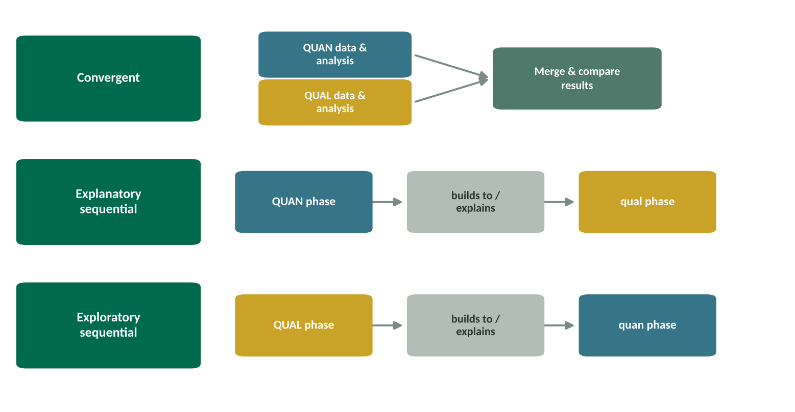</p>
<p><strong>Figure 14.</strong> <em>The three core mixed methods designs
(Creswell &amp; Plano Clark, 2018)</em></p>
<div class="table-wrap"><table>

<thead>
<tr class="header">
<th><strong>Design</strong></th>
<th><strong>Notation</strong></th>
<th><strong>Procedure</strong></th>
<th><strong>Example in Bangladesh</strong></th>
</tr>
</thead>
<tbody>
<tr class="odd">
<td><strong>Convergent (parallel)</strong></td>
<td>QUAN + QUAL</td>
<td>Collect both simultaneously, analyse separately, merge and
compare</td>
<td>Survey of 300 teachers on inclusive attitudes plus interviews with
15 teachers, merged in a joint display</td>
</tr>
<tr class="even">
<td><strong>Explanatory sequential</strong></td>
<td>QUAN → qual</td>
<td>Quantitative first; qualitative explains surprising or significant
results</td>
<td>Survey finds rural girls' lower maths scores; follow-up interviews
explore reasons</td>
</tr>
<tr class="odd">
<td><strong>Exploratory sequential</strong></td>
<td>QUAL → quan</td>
<td>Qualitative first to explore; develop an instrument or intervention;
test quantitatively</td>
<td>FGDs with madrasah students develop a scale of academic stress; then
a national survey</td>
</tr>
<tr class="even">
<td><strong>Embedded / intervention</strong></td>
<td>QUAN(qual)</td>
<td>Qualitative data embedded within an experiment</td>
<td>RCT of a reading programme with classroom observation of
implementation</td>
</tr>
<tr class="odd">
<td><strong>Multiphase / programme evaluation</strong></td>
<td>Several phases</td>
<td>Sequence of studies over time</td>
<td>Evaluation of a multi-year teacher development programme</td>
</tr>
<tr class="even">
<td><strong>Participatory / social justice</strong></td>
<td>Any of the above with a transformative framework</td>
<td>Community involvement throughout</td>
<td>Mixed methods PAR on Dalit children's schooling</td>
</tr>
</tbody>
</table></div>
<p><strong>Table 18.</strong> <em>Core and complex mixed methods
designs</em></p>
<h2 id="key-characteristics-of-mixed-methods-design">6.4 Key
characteristics of mixed methods design</h2>
<p>Creswell and Plano Clark (2018) identify core characteristics:
collecting and analysing both qualitative and quantitative data
rigorously in response to research questions;
<strong>integrating</strong> the two forms of data and results;
organising procedures into specific designs; and framing procedures
within theory and philosophy. Key dimensions for choosing a design are
<strong>timing</strong> (concurrent or sequential), <strong>priority /
weighting</strong> (equal or unequal), <strong>mixing / integration
point</strong> (design, data collection, analysis, interpretation) and
<strong>theoretical perspective</strong>.</p>
<h2 id="how-to-design-and-what-to-consider">6.5 How to design and what
to consider</h2>
<p>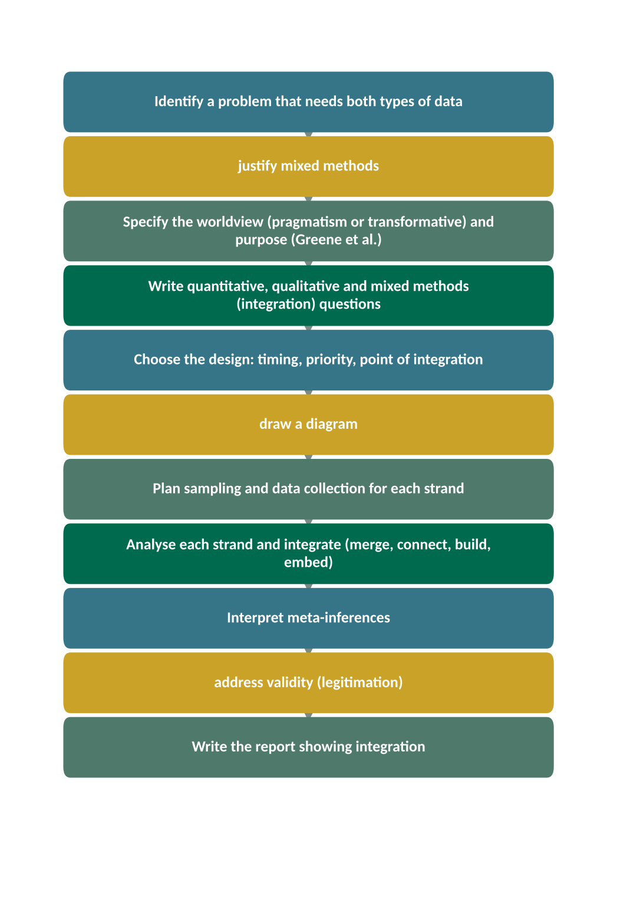</p>
<p><strong>Figure 15.</strong> <em>Steps to conduct a mixed methods
study</em></p>
<p><strong>Considerations:</strong> researcher skills in both
approaches; time and resources; feasibility of sequential phases; how
contradictions will be handled; how integration will be reported; ethics
across phases.</p>
<p><strong>Writing a mixed methods question:</strong> "To what extent
and in what ways do qualitative interviews with teachers help to explain
the survey results on the relationship between school leadership and
teacher collaboration?"</p>
<h2 id="sampling-techniques-in-mixed-methods-design">6.6 Sampling
techniques in mixed methods design</h2>
<p>Teddlie and Yu (2007) identified four mixed methods sampling
strategies:</p>
<div class="table-wrap"><table>

<thead>
<tr class="header">
<th><strong>Strategy</strong></th>
<th><strong>Description</strong></th>
<th><strong>Example</strong></th>
</tr>
</thead>
<tbody>
<tr class="odd">
<td><strong>Basic mixed methods sampling</strong></td>
<td>Combining probability and purposive features in one sample</td>
<td>Stratified purposive sampling of schools</td>
</tr>
<tr class="even">
<td><strong>Sequential mixed methods sampling</strong></td>
<td>Results of the first strand inform sampling for the second</td>
<td>Select extreme-scoring teachers from the survey for interviews</td>
</tr>
<tr class="odd">
<td><strong>Concurrent mixed methods sampling</strong></td>
<td>Probability and purposive samples drawn at the same time,
independently or as subsets</td>
<td>Random sample for survey; purposive subsample for observation</td>
</tr>
<tr class="even">
<td><strong>Multilevel mixed methods sampling</strong></td>
<td>Sampling at different levels of a hierarchy</td>
<td>Random districts, purposive head teachers, random students</td>
</tr>
</tbody>
</table></div>
<p><strong>Table 19.</strong> <em>Mixed methods sampling strategies
(Teddlie &amp; Yu, 2007)</em></p>
<p>Onwuegbuzie and Collins (2007) further distinguish
<strong>identical</strong>, <strong>parallel</strong>,
<strong>nested</strong> and <strong>multilevel</strong> sample
relationships between strands.</p>
<h2 id="techniques-to-use-different-tools-together-and-combine-data">6.7
Techniques to use different tools together and combine data</h2>
<p><strong>Integration strategies</strong> (Fetters, Curry &amp;
Creswell, 2013):</p>
<ul>
<li><p><strong>Merging:</strong> bring QUAN and QUAL results together
for comparison (convergent design).</p></li>
<li><p><strong>Connecting:</strong> results of one strand determine the
sample for the other (explanatory sequential).</p></li>
<li><p><strong>Building:</strong> results of one strand inform data
collection tools or interventions in the other (exploratory
sequential).</p></li>
<li><p><strong>Embedding:</strong> data collection and analysis linked
at multiple points (intervention designs).</p></li>
</ul>
<p><strong>Joint displays</strong> present quantitative and qualitative
results side by side.</p>
<div class="table-wrap"><table>

<thead>
<tr class="header">
<th><strong>Survey result (QUAN)</strong></th>
<th><strong>Interview theme (QUAL)</strong></th>
<th><strong>Meta-inference</strong></th>
</tr>
</thead>
<tbody>
<tr class="odd">
<td><strong>Teachers in schools with high distributed leadership scores
report 25% more weekly collaboration</strong></td>
<td>"Our head teacher gives us a period each week to plan together"</td>
<td>Structural time for collaboration explains part of the
relationship</td>
</tr>
<tr class="even">
<td><strong>No significant difference between urban and rural
schools</strong></td>
<td>"In rural schools, we are few, so we talk anyway" versus "In town,
there is no time"</td>
<td>Similar levels arise for different reasons: contextual mechanisms
differ</td>
</tr>
</tbody>
</table></div>
<p><strong>Table 20.</strong> <em>Example joint display: teacher
collaboration study</em></p>
<p><strong>Data transformation:</strong> quantitising qualitative data
(counting theme frequencies) or qualitising quantitative data (creating
profiles from scores) to compare strands.</p>
<div class="box box-critical"><div class="box-label">Critical Perspective</div>
<p>Critics warn of "mixed methods lite", in which studies collect both
kinds of data but never integrate them. Other debates concern paradigm
compatibility, privileging quantitative strands, and the additional
demands on novice researchers. Quality requires explicit integration and
justification.</p></div>
<div class="box box-exam"><div class="box-label">Exam Focus</div>
<p>Expect: "Define mixed methods research and trace its development."
"Explain the purposes of mixed methods research (Greene et al.)."
"Compare convergent, explanatory sequential and exploratory sequential
designs with examples." "Discuss sampling and integration techniques in
mixed methods research."</p></div>
<h1 id="unit-7-writing-report-and-evaluating-research">Unit 7: Writing
Report and Evaluating Research</h1><div aria-label="Tools for Unit 7: Writing Report and Evaluating Research" class="unit-tools" role="group"><button aria-label="Listen to Unit 7: Writing Report and Evaluating Research" class="tts-btn" data-target="unit-7-writing-report-and-evaluating-research" data-tts="unit" type="button"><span aria-hidden="true">▶</span> Listen to this chapter</button><button aria-label="Listen to the summary of Unit 7: Writing Report and Evaluating Research" class="tts-btn" data-target="sum-unit-7-writing-report-and-evaluating-research" data-tts="summary" type="button"><span aria-hidden="true">▶</span> Listen to summary</button><button class="done-btn" data-unit="unit-7-writing-report-and-evaluating-research" type="button">Mark as studied</button></div><details class="unit-summary" id="sum-unit-7-writing-report-and-evaluating-research"><summary>Chapter summary</summary><div class="sum-body"><p>Different research traditions have different report structures, but all share the logic of problem → literature → method → findings → discussion .</p><p><strong>This chapter covers:</strong> Structure of research reports; Writing action research reports; Writing qualitative research reports; Writing mixed methods research reports; Evaluating the quality of your research report; Citation and referencing.</p></div></details><details class="curriculum" open=""><summary><span class="cur-label">What the curriculum says</span><span class="cur-unit">Unit 7: Writing Report and Evaluating Research · 4 contact hours</span></summary><div class="cur-h">Learning outcomes</div><p class="cur-lead">At the end of this unit learners will be able to</p><ol type="a"><li>explain the structure of different research designs</li><li>evaluate any research report in education</li></ol><div class="cur-h">Content</div><ul><li>Structure of research reports</li><li>Writing action research reports</li><li>Writing qualitative research reports</li><li>Writing Mixed Method research report</li><li>Evaluation of the quality of your research report</li><li>Citation and referencing</li></ul></details>
<h2 id="structure-of-research-reports">7.1 Structure of research
reports</h2>
<p>Different research traditions have different report structures, but
all share the logic of <strong>problem → literature → method → findings
→ discussion</strong>.</p>
<h2 id="writing-action-research-reports">7.2 Writing action research
reports</h2>
<div class="table-wrap"><table>

<thead>
<tr class="header">
<th><strong>Section</strong></th>
<th><strong>Content</strong></th>
</tr>
</thead>
<tbody>
<tr class="odd">
<td><strong>Title and abstract</strong></td>
<td>Indicate the focus and context; summary of concern, actions,
findings and learning</td>
</tr>
<tr class="even">
<td><strong>Introduction / context</strong></td>
<td>School and classroom context; my role and values; the concern and
why it matters</td>
</tr>
<tr class="odd">
<td><strong>Literature</strong></td>
<td>Relevant theory and research informing the action</td>
</tr>
<tr class="even">
<td><strong>Research questions</strong></td>
<td>Usually "How can I improve...?" or "What happens when...?"</td>
</tr>
<tr class="odd">
<td><strong>Methodology</strong></td>
<td>Action research model; participants; cycles; data collection
methods; ethics; validation procedures</td>
</tr>
<tr class="even">
<td><strong>Cycle 1</strong></td>
<td>Plan, action, observation (data), reflection</td>
</tr>
<tr class="odd">
<td><strong>Cycle 2 (and later)</strong></td>
<td>Revised plan, action, observation, reflection</td>
</tr>
<tr class="even">
<td><strong>Findings and discussion</strong></td>
<td>Evidence of change; interpretation; unexpected outcomes; link to
literature</td>
</tr>
<tr class="odd">
<td><strong>Learning and implications</strong></td>
<td>Personal and professional learning; implications for practice and
others</td>
</tr>
<tr class="even">
<td><strong>Limitations and next steps</strong></td>
<td>Honest account; plans for future cycles</td>
</tr>
<tr class="odd">
<td><strong>References and appendices</strong></td>
<td>Instruments, samples of student work, consent forms</td>
</tr>
</tbody>
</table></div>
<p><strong>Table 21.</strong> <em>Structure of an action research
report</em></p>
<p>Feldman and colleagues (University of Massachusetts) suggest writing
an action research report as a <strong>narrative of practice and
inquiry</strong>, using the first person, describing the researcher's
thinking at each stage, and making the evidence visible.</p>
<h2 id="writing-qualitative-research-reports">7.3 Writing qualitative
research reports</h2>
<p><strong>Structure:</strong> introduction (problem, purpose,
questions); literature review (often briefer and used as a sensitising
frame); methodology (design rationale, researcher positionality,
setting, participants and sampling, data collection, analysis
procedures, trustworthiness, ethics); findings (organised by themes,
with rich description and quotations); discussion (interpretation,
relation to literature and theory, implications); conclusion.</p>
<p><strong>Writing features:</strong> thick description; participants'
voices; reflexivity; first-person voice acceptable; narrative
structures; careful anonymisation. The <strong>Standards for Reporting
Qualitative Research (SRQR)</strong> (O'Brien et al., 2014) and
<strong>COREQ</strong> (Tong et al., 2007) checklists support complete
reporting.</p>
<h2 id="writing-mixed-methods-research-reports">7.4 Writing mixed
methods research reports</h2>
<p><strong>Structure options:</strong> (1) separate QUAN and QUAL
sections followed by an integration section; or (2) integrated by
research question. Essential elements: rationale for mixed methods;
design name and diagram; notation; procedures for each strand;
integration procedures; joint displays; meta-inferences; legitimation.
The <strong>Good Reporting of A Mixed Methods Study (GRAMMS)</strong>
guidelines (O'Cathain et al., 2008) list six items: justify using mixed
methods; describe the design (purpose, priority, sequence); describe
each method (sampling, data collection, analysis); describe where and
how integration occurred; describe limitations of one method associated
with the other; describe insights gained from mixing.</p>
<h2 id="evaluating-the-quality-of-your-research-report">7.5 Evaluating
the quality of your research report</h2>
<div class="table-wrap"><table>

<thead>
<tr class="header">
<th><strong>Research type</strong></th>
<th><strong>Quality criteria</strong></th>
</tr>
</thead>
<tbody>
<tr class="odd">
<td><strong>Action research</strong></td>
<td>Evidence of improvement; validated by critical friends; transparency
of cycles; congruence with values; catalytic and democratic validity
(Herr &amp; Anderson, 2015: outcome, process, democratic, catalytic,
dialogic validity)</td>
</tr>
<tr class="even">
<td><strong>Qualitative</strong></td>
<td>Credibility, transferability, dependability, confirmability (Lincoln
&amp; Guba); Tracy's (2010) eight "big-tent" criteria: worthy topic,
rich rigour, sincerity, credibility, resonance, significant
contribution, ethics, meaningful coherence</td>
</tr>
<tr class="odd">
<td><strong>Mixed methods</strong></td>
<td>Quality of each strand plus integration quality: legitimation types
(Onwuegbuzie &amp; Johnson, 2006); GRAMMS completeness</td>
</tr>
<tr class="even">
<td><strong>Quantitative</strong></td>
<td>Internal, external, construct and statistical conclusion validity;
reliability</td>
</tr>
</tbody>
</table></div>
<p><strong>Table 22.</strong> <em>Quality criteria for different
research types</em></p>
<p>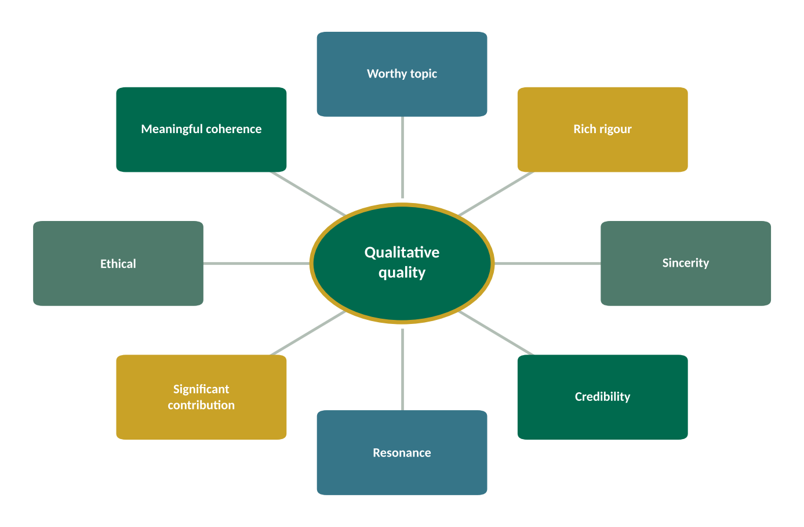</p>
<p><strong>Figure 16.</strong> <em>Tracy's (2010) eight big-tent
criteria for qualitative quality</em></p>
<h3 id="self-evaluation-checklist">Self-evaluation checklist</h3>
<ul>
<li><p>Is the problem significant and clearly linked to
practice?</p></li>
<li><p>Is the paradigm and design justified and consistent?</p></li>
<li><p>Are methods described in enough detail to judge and
replicate?</p></li>
<li><p>Is the evidence sufficient and convincing? Are claims
supported?</p></li>
<li><p>Are participants' voices represented fairly?</p></li>
<li><p>Is the analysis systematic and transparent?</p></li>
<li><p>Are ethical issues addressed?</p></li>
<li><p>Is the contribution to practice and knowledge clear?</p></li>
<li><p>Is the writing clear, well-structured and correctly
referenced?</p></li>
</ul>
<h2 id="citation-and-referencing">7.6 Citation and referencing</h2>
<p>Use <strong>APA 7th edition</strong> consistently. Key rules:
author-date in-text citations; "et al." for three or more authors from
the first citation; page numbers for direct quotations (Stenhouse, 1975,
p. 143); reference list in alphabetical order with hanging indent; DOIs
as URLs (https://doi.org/...); italics for book titles and journal names
and volumes. Use reference managers (Zotero, Mendeley, EndNote) to
manage citations.</p>
<div class="box box-tip"><div class="box-label">Study tip</div><p>Swap draft reports with a classmate and evaluate each other's work using Tracy's criteria or GRAMMS, then revise. Peer evaluation builds the critical eye you need as a researcher and reviewer.</p></div>
<div class="box box-exam"><div class="box-label">Exam Focus</div>
<p>Expect: "Describe the structure of an action research report." "How
does a qualitative research report differ from a quantitative one?"
"What should a mixed methods report include (GRAMMS)?" "Discuss criteria
for evaluating the quality of action, qualitative and mixed methods
research."</p></div>
<h1 id="reading-list">Reading List</h1><div aria-label="Tools for Reading List" class="unit-tools" role="group"><button aria-label="Listen to Reading List" class="tts-btn" data-target="reading-list" data-tts="unit" type="button"><span aria-hidden="true">▶</span> Listen to this chapter</button><button class="done-btn" data-unit="reading-list" type="button">Mark as studied</button></div><h2 id="reading-list-curriculum">Recommended in the curriculum</h2><p class="rl-note">Books, journals and reports listed in the official course curriculum, as given there.</p><ol class="reading"><li>Baumfield, V., Hall, E., &amp; Wall, K. (2008). Action Research in the Classroom. Los Angeles:age.</li><li>Best, J. W., &amp; Khan, J. V. (2006). Research in Education. New Delhi: Prentice Hall.</li><li>Connolly, P. (2007). Quantitative Data Analysis in Education: A critical introduction using SPSS. London: Routledge.</li><li>Creswell, J. W. (2008). Educational Research: Planning, conducting and evaluating Qualitative and Quantitative research. New Jersey: Merrill Prentice Hall.</li><li>Fraenkel, J. R., &amp; Wallen, N. E. (2009). How to Design and Evaluate Research in Education. New York: McGraw-Hill.</li><li>Gall, M. D., Gall, J. P., &amp; Borg, W. R. (2007). Educational Research: An introduction. New York: Allyn and Becon.</li><li>Gay, L. R., &amp; Airasian, P. (2003). Educational Research: Competencies for Analysis and Applicants. New Jersey: Merrill Prentice Hall.</li><li>Hopkins, D. (2002). A Teacher’s Guide to classroom Research. UK: Open University Press.</li><li>Jarnes, M. (1996). Action Research Curriculum. London: Kogan Press.</li><li>Johnson, B., &amp; Christensen, L. (2008). Educational Research: Quantitative, Qualitative and Mixed approaches. Los Angeles: Sage.</li><li>Kemmis, S., McTaggart, R., &amp; Retallick, J. (2004). The Action Research Planner. Karachi: Aga Khan University.</li><li>Kothary, C. R. (2005). Research Methodology. New Delhi: New Age International Publishers.</li><li>Lewin, K. M., &amp; Stuart, J. S. (1991). Educational Innovation in Developing Countries: Case Studies of Change Makers. London: MCMILLAN.</li><li>Lunenburg, F. C., &amp; Irby, B. J. (2008). Writing a Successful Thesis or Dissertation. California: Corwin Press.</li><li>Manion, L., &amp; Cohen, L. (1994). Research Methods in Education. London: Routledge.</li><li>McNiff, J., &amp; Whitehead, J. (2005). Action Research for Teachers: A practical guide. London: David Fulton Publishers.</li><li>Punce, K. F. (2009). Introduction to Research Methods in Education. Los Angeles: Sage.</li><li>Quaratiello, A.R. (2007). The College Student’s Research Companion. New York: Neal-Schuman Publishers, Inc.</li><li>Rob, H. (nd). Teacher Research and School Improvement-Opening Doors from the Inside. Buckingham: Open University Press.</li><li>Robinson, V., &amp; Lai, M. K. (2006). Practitioner Research for Educators: A Guide to Improving Classrooms and Schools. California: Corwin Press.</li><li>Rossman, G. B., &amp; Rallis, S. F. (2012). Learning in the field: An Introduction to Qualitative Research. CA: Sage.</li><li>Sharp, J. G. (2009). Success with your education research project. Cornwall, UK: Learning Matters.</li><li>Sherman, R. R., &amp; Webb, R. B. (1990). Qualitative Research in Education: Focus and Methods. New York: The Falmer Press.</li><li>Silverman, D. (1998). Qualitative Research: Theory, Method and Practice. London: Sage.</li><li>Teddlie, C., &amp; Tashakkori, A. (2009). Foundations of Mixed Methods Research: Integrating Quantitative and Qualitative Approaches in the Social and Behavioral Sciences. CA: Sage.</li><li>Publication Manual of the American Psychological Association. (2009). Washington, DC: American Psychological Association.</li><li>হোসনে আরা বেগম ও অন্যান্য (২০০২), শিক্ষায় পাঠোপযোগী গবেষণা ধারা: সমস্যা প্রেক্ষাপট ভিত্তিক সমাধান, নিবন্ধমালা, ১১, পৃঃ ৯২-১৪৬।</li><li>Journals and Reports</li><li>Allan, F., &amp; Tarin, W. (n.d.). Suggestions for Writing the Action Research Report. University of Massachusetts Amherst retrieved on 7 August 2021, from http://people.umass.edu/~afeldman/ ARreadingmaterials/WritingARReport.html</li><li>Banegas, D.L., &amp; Villacañas-de-Castro, L.S. (2015). A look at ethical issues in action research in education. Argentinian Journal of Applied Linguistics, 3(1), 58-67.</li><li>Ha, P.V. (2004). Classroom Observation as a Tool for Professional Growth. Teachers‘ Edition, 26-30.</li><li>Othman, N., &amp; Chia, S.Y. (2016). The challenges of action research implementation in Malaysian schools. Pertanika Journal of Social Science &amp; Humanities, 24 (1), 43 – 52.</li><li>Videos Action Research: How it works:https://drive.google.com/file/d/1W8S1OaVy6CPfxtMM3LDaar21CkUBe_X/view Action Research for Teachers: https://drive.google.com/file/d/1nZMGFThgvkfRg8rilmqwLBTzSgtXp8rJ/view What is Action Research: https://drive.google.com/file/d/1pwo0zSY6r7DNqMvtd9OnY7KAasHTII_o/view</li><li>T 11 Writing Your Action Research Report (2018 updated version at https://youtu.be/xTyz5DxALOE): Sample Action Research Report 1:</li><li>From ―Effect of Technology on Enthusiasm for Learning Science‖ by J. Hollis (1995), in S. Spiegel, A. Collins, &amp; J. Lappert (Eds.), Action Research: Perspectives from Teachers‘ Classrooms. Science FEAT (Science For Early Adolescence Teachers). Tallahassee, FL: Southeastern Regional Vision for Education. Retrieved October 20, 2004, from http://www.enc.org/professional/learn/research/journal/science/document.shtm?input=ENC002432-2432_ch1. Self-guided Action Research Tutorial:</li><li>Center for Collaborative Action Research. (2021). https://www.actionresearchtutorials.org/tutorialoverview Action Research networks:</li><li>Action Research Network for Americas (ARNA). (2021). https://arnawebsite.org/</li><li>The Collaborative Action Research Network (CARN). (2021).</li><li>https://www.carn.org.uk/?from=carnnew/</li><li>Action Learning, Action Research Association Ltd (ALARA). (2021).</li><li>https://www.alarassociation.org/?q=networks/around-the-world/europe</li></ol><h2 id="reading-list-world">Widely read books worldwide on this subject</h2><p class="rl-note">Well-known international texts that go well with this course.</p><ol class="reading"><li>Stenhouse, L. (1975). An Introduction to Curriculum Research and Development. Heinemann.</li><li>Kemmis, S., McTaggart, R., &amp; Nixon, R. (2014). The Action Research Planner. Springer.</li><li>McNiff, J., &amp; Whitehead, J. (2011). All You Need to Know About Action Research (2nd ed.). Sage.</li><li>Denzin, N. K., &amp; Lincoln, Y. S. (Eds.). (2018). The SAGE Handbook of Qualitative Research (5th ed.). Sage.</li><li>Merriam, S. B., &amp; Tisdell, E. J. (2016). Qualitative Research: A Guide to Design and Implementation (4th ed.). Jossey-Bass.</li><li>Fullan, M. (2016). The New Meaning of Educational Change (5th ed.). Teachers College Press.</li><li>Lincoln, Y. S., &amp; Guba, E. G. (1985). Naturalistic Inquiry. Sage.</li></ol><h1 id="exam-preparation-bank">Exam Preparation Bank</h1><div aria-label="Tools for Exam Preparation Bank" class="unit-tools" role="group"><button aria-label="Listen to Exam Preparation Bank" class="tts-btn" data-target="exam-preparation-bank" data-tts="unit" type="button"><span aria-hidden="true">▶</span> Listen to this chapter</button><button class="done-btn" data-unit="exam-preparation-bank" type="button">Mark as studied</button></div>
<h2 id="a.-multiple-choice-questions">A. Multiple-choice questions</h2>
<p><strong>1.</strong> The term "action research" was coined by:</p>
<blockquote class="mcq-options">
<p><strong>(a)</strong> Stephen Corey <strong>(b)</strong> Kurt Lewin
<strong>(c)</strong> Lawrence Stenhouse <strong>(d)</strong> John
Elliott</p>
<details class="answer"><summary>Show answer</summary><p>Answer: (b)</p></details>
</blockquote>
<p><strong>2.</strong> "Research that produces nothing but books will
not suffice" was said by:</p>
<blockquote class="mcq-options">
<p><strong>(a)</strong> Lewin <strong>(b)</strong> Stenhouse
<strong>(c)</strong> Dewey <strong>(d)</strong> Kemmis</p>
<details class="answer"><summary>Show answer</summary><p>Answer: (a)</p></details>
</blockquote>
<p><strong>3.</strong> Who introduced action research into American
schools at Teachers College?</p>
<blockquote class="mcq-options">
<p><strong>(a)</strong> Stephen Corey <strong>(b)</strong> John Dewey
<strong>(c)</strong> Jack Whitehead <strong>(d)</strong> Ernest
Stringer</p>
<details class="answer"><summary>Show answer</summary><p>Answer: (a)</p></details>
</blockquote>
<p><strong>4.</strong> "Curriculum as hypothesis" and "teacher as
researcher" are associated with:</p>
<blockquote class="mcq-options">
<p><strong>(a)</strong> Ralph Tyler <strong>(b)</strong> Lawrence
Stenhouse <strong>(c)</strong> Hilda Taba <strong>(d)</strong> Benjamin
Bloom</p>
<details class="answer"><summary>Show answer</summary><p>Answer: (b)</p></details>
</blockquote>
<p><strong>5.</strong> The Humanities Curriculum Project was directed
by:</p>
<blockquote class="mcq-options">
<p><strong>(a)</strong> Stenhouse <strong>(b)</strong> Elliott
<strong>(c)</strong> Kemmis <strong>(d)</strong> Carr</p>
<details class="answer"><summary>Show answer</summary><p>Answer: (a)</p></details>
</blockquote>
<p><strong>6.</strong> The book "Becoming Critical" (1986) was written
by:</p>
<blockquote class="mcq-options">
<p><strong>(a)</strong> Carr and Kemmis <strong>(b)</strong> McNiff and
Whitehead <strong>(c)</strong> Lincoln and Guba <strong>(d)</strong>
Glaser and Strauss</p>
<details class="answer"><summary>Show answer</summary><p>Answer: (a)</p></details>
</blockquote>
<p><strong>7.</strong> Emancipatory action research corresponds to
Habermas's:</p>
<blockquote class="mcq-options">
<p><strong>(a)</strong> Technical interest <strong>(b)</strong>
Practical interest <strong>(c)</strong> Emancipatory interest
<strong>(d)</strong> Instrumental interest</p>
<details class="answer"><summary>Show answer</summary><p>Answer: (c)</p></details>
</blockquote>
<p><strong>8.</strong> Living educational theory is associated with:</p>
<blockquote class="mcq-options">
<p><strong>(a)</strong> Jack Whitehead <strong>(b)</strong> John Elliott
<strong>(c)</strong> Kurt Lewin <strong>(d)</strong> Stephen Kemmis</p>
<details class="answer"><summary>Show answer</summary><p>Answer: (a)</p></details>
</blockquote>
<p><strong>9.</strong> "How do I improve what I am doing?" is the
central question of:</p>
<blockquote class="mcq-options">
<p><strong>(a)</strong> Grounded theory <strong>(b)</strong> Living
theory action research <strong>(c)</strong> Ethnography
<strong>(d)</strong> Survey research</p>
<details class="answer"><summary>Show answer</summary><p>Answer: (b)</p></details>
</blockquote>
<p><strong>10.</strong> Lewin's model of change has three stages:
unfreeze, change and:</p>
<blockquote class="mcq-options">
<p><strong>(a)</strong> refreeze <strong>(b)</strong> reflect
<strong>(c)</strong> review <strong>(d)</strong> repeat</p>
<details class="answer"><summary>Show answer</summary><p>Answer: (a)</p></details>
</blockquote>
<p><strong>11.</strong> Force-field analysis identifies:</p>
<blockquote class="mcq-options">
<p><strong>(a)</strong> Sample size <strong>(b)</strong> Driving and
restraining forces <strong>(c)</strong> Coding categories
<strong>(d)</strong> Effect sizes</p>
<details class="answer"><summary>Show answer</summary><p>Answer: (b)</p></details>
</blockquote>
<p><strong>12.</strong> The plan-act-observe-reflect spiral is most
associated with:</p>
<blockquote class="mcq-options">
<p><strong>(a)</strong> Kemmis and McTaggart <strong>(b)</strong> Glaser
and Strauss <strong>(c)</strong> Creswell and Plano Clark
<strong>(d)</strong> Braun and Clarke</p>
<details class="answer"><summary>Show answer</summary><p>Answer: (a)</p></details>
</blockquote>
<p><strong>13.</strong> Elliott's model emphasises that the "general
idea":</p>
<blockquote class="mcq-options">
<p><strong>(a)</strong> Must remain fixed <strong>(b)</strong> Should be
allowed to shift <strong>(c)</strong> Is decided by an outsider
<strong>(d)</strong> Is not needed</p>
<details class="answer"><summary>Show answer</summary><p>Answer: (b)</p></details>
</blockquote>
<p><strong>14.</strong> PRA was popularised by:</p>
<blockquote class="mcq-options">
<p><strong>(a)</strong> Robert Chambers <strong>(b)</strong> Paulo
Freire <strong>(c)</strong> Kurt Lewin <strong>(d)</strong> Michael
Patton</p>
<details class="answer"><summary>Show answer</summary><p>Answer: (a)</p></details>
</blockquote>
<p><strong>15.</strong> A seasonal calendar in PRA can help:</p>
<blockquote class="mcq-options">
<p><strong>(a)</strong> Calculate correlations <strong>(b)</strong> Plan
school calendars around agricultural and flood cycles
<strong>(c)</strong> Write APA references <strong>(d)</strong> Code
interview data</p>
<details class="answer"><summary>Show answer</summary><p>Answer: (b)</p></details>
</blockquote>
<p><strong>16.</strong> The "essence" of lived experience is the focus
of:</p>
<blockquote class="mcq-options">
<p><strong>(a)</strong> Ethnography <strong>(b)</strong> Phenomenology
<strong>(c)</strong> Case study <strong>(d)</strong> Grounded theory</p>
<details class="answer"><summary>Show answer</summary><p>Answer: (b)</p></details>
</blockquote>
<p><strong>17.</strong> Bracketing (epoché) is a procedure in:</p>
<blockquote class="mcq-options">
<p><strong>(a)</strong> Phenomenology <strong>(b)</strong> Ethnography
<strong>(c)</strong> Survey <strong>(d)</strong> Experiment</p>
<details class="answer"><summary>Show answer</summary><p>Answer: (a)</p></details>
</blockquote>
<p><strong>18.</strong> Open, axial and selective coding are associated
with:</p>
<blockquote class="mcq-options">
<p><strong>(a)</strong> Grounded theory <strong>(b)</strong> Narrative
research <strong>(c)</strong> Content analysis <strong>(d)</strong>
Phenomenology</p>
<details class="answer"><summary>Show answer</summary><p>Answer: (a)</p></details>
</blockquote>
<p><strong>19.</strong> Grounded theory was developed by:</p>
<blockquote class="mcq-options">
<p><strong>(a)</strong> Glaser and Strauss <strong>(b)</strong> Lincoln
and Guba <strong>(c)</strong> Stake and Yin <strong>(d)</strong>
Clandinin and Connelly</p>
<details class="answer"><summary>Show answer</summary><p>Answer: (a)</p></details>
</blockquote>
<p><strong>20.</strong> The study of a culture-sharing group is:</p>
<blockquote class="mcq-options">
<p><strong>(a)</strong> Ethnography <strong>(b)</strong> Phenomenology
<strong>(c)</strong> Case study <strong>(d)</strong> Narrative</p>
<details class="answer"><summary>Show answer</summary><p>Answer: (a)</p></details>
</blockquote>
<p><strong>21.</strong> A bounded system studied in depth is a:</p>
<blockquote class="mcq-options">
<p><strong>(a)</strong> Case study <strong>(b)</strong> Survey
<strong>(c)</strong> Ethnography <strong>(d)</strong> Correlational
study</p>
<details class="answer"><summary>Show answer</summary><p>Answer: (a)</p></details>
</blockquote>
<p><strong>22.</strong> The Belmont Report's principles are respect for
persons, beneficence and:</p>
<blockquote class="mcq-options">
<p><strong>(a)</strong> justice <strong>(b)</strong> anonymity
<strong>(c)</strong> honesty <strong>(d)</strong> validity</p>
<details class="answer"><summary>Show answer</summary><p>Answer: (a)</p></details>
</blockquote>
<p><strong>23.</strong> Using multiple researchers to analyse the same
data is:</p>
<blockquote class="mcq-options">
<p><strong>(a)</strong> Data triangulation <strong>(b)</strong>
Investigator triangulation <strong>(c)</strong> Theory triangulation
<strong>(d)</strong> Methodological triangulation</p>
<details class="answer"><summary>Show answer</summary><p>Answer: (b)</p></details>
</blockquote>
<p><strong>24.</strong> Denzin identified how many types of
triangulation?</p>
<blockquote class="mcq-options">
<p><strong>(a)</strong> Two <strong>(b)</strong> Three
<strong>(c)</strong> Four <strong>(d)</strong> Five</p>
<details class="answer"><summary>Show answer</summary><p>Answer: (c)</p></details>
</blockquote>
<p><strong>25.</strong> The six-phase approach to thematic analysis was
proposed by:</p>
<blockquote class="mcq-options">
<p><strong>(a)</strong> Braun and Clarke <strong>(b)</strong> Miles and
Huberman <strong>(c)</strong> Strauss and Corbin <strong>(d)</strong>
Krippendorff</p>
<details class="answer"><summary>Show answer</summary><p>Answer: (a)</p></details>
</blockquote>
<p><strong>26.</strong> Data condensation, data display and conclusion
drawing are elements of:</p>
<blockquote class="mcq-options">
<p><strong>(a)</strong> Miles, Huberman and Saldaña's model
<strong>(b)</strong> Braun and Clarke's model <strong>(c)</strong>
Lewin's model <strong>(d)</strong> Stake's model</p>
<details class="answer"><summary>Show answer</summary><p>Answer: (a)</p></details>
</blockquote>
<p><strong>27.</strong> Analysing data during the collection period to
guide further collection is:</p>
<blockquote class="mcq-options">
<p><strong>(a)</strong> Interim analysis <strong>(b)</strong>
Meta-analysis <strong>(c)</strong> Factor analysis <strong>(d)</strong>
Summative analysis</p>
<details class="answer"><summary>Show answer</summary><p>Answer: (a)</p></details>
</blockquote>
<p><strong>28.</strong> Counting male and female characters in textbooks
is an example of:</p>
<blockquote class="mcq-options">
<p><strong>(a)</strong> Phenomenology <strong>(b)</strong> Content
analysis <strong>(c)</strong> Grounded theory <strong>(d)</strong>
Ethnography</p>
<details class="answer"><summary>Show answer</summary><p>Answer: (b)</p></details>
</blockquote>
<p><strong>29.</strong> The multitrait-multimethod matrix was proposed
by:</p>
<blockquote class="mcq-options">
<p><strong>(a)</strong> Campbell and Fiske <strong>(b)</strong> Greene
and Caracelli <strong>(c)</strong> Tashakkori and Teddlie
<strong>(d)</strong> Morse and Niehaus</p>
<details class="answer"><summary>Show answer</summary><p>Answer: (a)</p></details>
</blockquote>
<p><strong>30.</strong> Greene, Caracelli and Graham's purposes include
triangulation, complementarity, development, initiation and:</p>
<blockquote class="mcq-options">
<p><strong>(a)</strong> expansion <strong>(b)</strong> explanation
<strong>(c)</strong> evaluation <strong>(d)</strong> extension</p>
<details class="answer"><summary>Show answer</summary><p>Answer: (a)</p></details>
</blockquote>
<p><strong>31.</strong> In mixed methods notation, QUAN → qual
indicates:</p>
<blockquote class="mcq-options">
<p><strong>(a)</strong> Convergent design <strong>(b)</strong>
Explanatory sequential design <strong>(c)</strong> Exploratory
sequential design <strong>(d)</strong> Embedded design</p>
<details class="answer"><summary>Show answer</summary><p>Answer: (b)</p></details>
</blockquote>
<p><strong>32.</strong> An exploratory sequential design typically
begins with:</p>
<blockquote class="mcq-options">
<p><strong>(a)</strong> Quantitative data <strong>(b)</strong>
Qualitative data <strong>(c)</strong> An experiment <strong>(d)</strong>
A meta-analysis</p>
<details class="answer"><summary>Show answer</summary><p>Answer: (b)</p></details>
</blockquote>
<p><strong>33.</strong> Collecting survey and interview data
simultaneously and merging them is a:</p>
<blockquote class="mcq-options">
<p><strong>(a)</strong> Convergent design <strong>(b)</strong>
Explanatory design <strong>(c)</strong> Exploratory design
<strong>(d)</strong> Multiphase design</p>
<details class="answer"><summary>Show answer</summary><p>Answer: (a)</p></details>
</blockquote>
<p><strong>34.</strong> A joint display is used for:</p>
<blockquote class="mcq-options">
<p><strong>(a)</strong> Integration of QUAN and QUAL results
<strong>(b)</strong> Calculating reliability <strong>(c)</strong>
Sampling <strong>(d)</strong> Ethics approval</p>
<details class="answer"><summary>Show answer</summary><p>Answer: (a)</p></details>
</blockquote>
<p><strong>35.</strong> Teddlie and Yu identified sequential,
concurrent, multilevel and ___ mixed methods sampling.</p>
<blockquote class="mcq-options">
<p><strong>(a)</strong> basic <strong>(b)</strong> random
<strong>(c)</strong> snowball <strong>(d)</strong> theoretical</p>
<details class="answer"><summary>Show answer</summary><p>Answer: (a)</p></details>
</blockquote>
<p><strong>36.</strong> GRAMMS is a reporting guideline for:</p>
<blockquote class="mcq-options">
<p><strong>(a)</strong> Experiments <strong>(b)</strong> Mixed methods
studies <strong>(c)</strong> Systematic reviews <strong>(d)</strong>
Case studies</p>
<details class="answer"><summary>Show answer</summary><p>Answer: (b)</p></details>
</blockquote>
<p><strong>37.</strong> Tracy's (2010) "big-tent" criteria apply to:</p>
<blockquote class="mcq-options">
<p><strong>(a)</strong> Quantitative research <strong>(b)</strong>
Qualitative research <strong>(c)</strong> Statistical tests
<strong>(d)</strong> Meta-analysis</p>
<details class="answer"><summary>Show answer</summary><p>Answer: (b)</p></details>
</blockquote>
<p><strong>38.</strong> Catalytic validity in action research refers
to:</p>
<blockquote class="mcq-options">
<p><strong>(a)</strong> Reliability of instruments <strong>(b)</strong>
The degree to which research energises participants to change
<strong>(c)</strong> Statistical significance <strong>(d)</strong>
Sample representativeness</p>
<details class="answer"><summary>Show answer</summary><p>Answer: (b)</p></details>
</blockquote>
<p><strong>39.</strong> "Incredulity toward metanarratives" is a
description of:</p>
<blockquote class="mcq-options">
<p><strong>(a)</strong> Positivism <strong>(b)</strong> Postmodernism
<strong>(c)</strong> Pragmatism <strong>(d)</strong> Behaviourism</p>
<details class="answer"><summary>Show answer</summary><p>Answer: (b)</p></details>
</blockquote>
<p><strong>40.</strong> In APA 7th, a work by three or more authors is
cited from the first citation as:</p>
<blockquote class="mcq-options">
<p><strong>(a)</strong> All authors <strong>(b)</strong> First author et
al. <strong>(c)</strong> First two authors <strong>(d)</strong> Title
only</p>
<details class="answer"><summary>Show answer</summary><p>Answer: (b)</p></details>
</blockquote>
<h2 id="b.-short-answer-questions">B. Short-answer questions</h2>
<blockquote class="mcq-options">
<p><strong>1.</strong> Distinguish positivist and interpretive
paradigms.</p>
<p><strong>2.</strong> Why have traditional research paradigms often
failed to change practice?</p>
<p><strong>3.</strong> Define action research (Carr &amp; Kemmis).</p>
<p><strong>4.</strong> State five characteristics of action
research.</p>
<p><strong>5.</strong> Distinguish technical, practical and emancipatory
action research.</p>
<p><strong>6.</strong> What did Stenhouse mean by "extended
professionalism"?</p>
<p><strong>7.</strong> Write Lewin's spiral of steps.</p>
<p><strong>8.</strong> State Elliott's modifications to Lewin's
model.</p>
<p><strong>9.</strong> What is living educational theory?</p>
<p><strong>10.</strong> Name five PRA tools and their educational
uses.</p>
<p><strong>11.</strong> State five major themes of qualitative research
(Patton).</p>
<p><strong>12.</strong> Distinguish phenomenology and grounded
theory.</p>
<p><strong>13.</strong> List five ethical principles in educational
research.</p>
<p><strong>14.</strong> What is a reflective journal? How is it
used?</p>
<p><strong>15.</strong> Explain Denzin's types of triangulation.</p>
<p><strong>16.</strong> Write the six phases of Braun and Clarke's
thematic analysis.</p>
<p><strong>17.</strong> State Greene, Caracelli and Graham's five
purposes of mixed methods.</p>
<p><strong>18.</strong> Explain the notation QUAL → quan.</p>
<p><strong>19.</strong> What is a joint display?</p>
<p><strong>20.</strong> List the six GRAMMS items.</p>
</blockquote>
<h2 id="c.-broad-essay-questions">C. Broad (essay) questions</h2>
<blockquote class="mcq-options">
<p><strong>1.</strong> Critically compare positivist, interpretive,
constructivist and postmodern research paradigms and explain why they
have often failed to bring change in educational practice.</p>
<p><strong>2.</strong> Define action research. Discuss its conceptual
framework, characteristics, scope, rationale, uses and limitations.</p>
<p><strong>3.</strong> "Teachers should be researchers of their own
practice." Discuss with reference to Stenhouse and the political,
professional and personal dimensions of teacher research.</p>
<p><strong>4.</strong> Trace the development of action research through
the contributions of Lewin, Stenhouse, Kemmis and McTaggart, Elliott and
Whitehead.</p>
<p><strong>5.</strong> Design an action research project to address a
classroom problem in a Bangladeshi school, showing the diagnosis, model,
cycles, data collection and validation.</p>
<p><strong>6.</strong> What is Participatory Rural Appraisal? Discuss
its principles, tools and use in educational planning in Bangladesh.</p>
<p><strong>7.</strong> Explain the concept, emergence, themes and
rationale of qualitative research in education.</p>
<p><strong>8.</strong> Compare case study, ethnography, phenomenology
and grounded theory with examples from education.</p>
<p><strong>9.</strong> Discuss qualitative data collection techniques
and explain how data are analysed through content analysis, thematic
analysis and interim analysis.</p>
<p><strong>10.</strong> Define mixed methods research. Explain its
types, sampling techniques and integration strategies with examples.</p>
<p><strong>11.</strong> Explain the structure of action research,
qualitative and mixed methods reports, and discuss how the quality of
each can be evaluated.</p>
<p><strong>12.</strong> Discuss the ethical issues involved in action
research and qualitative research, especially when teachers research
their own students.</p>
</blockquote>
<h1 id="references">References</h1><div aria-label="Tools for References" class="unit-tools" role="group"><button aria-label="Listen to References" class="tts-btn" data-target="references" data-tts="unit" type="button"><span aria-hidden="true">▶</span> Listen to this chapter</button><button class="done-btn" data-unit="references" type="button">Mark as studied</button></div>
<p>American Educational Research Association. (2011). Code of ethics.
<em>Educational Researcher, 40</em>(3), 145-156.</p>
<p>Banegas, D. L., &amp; Villacañas de Castro, L. S. (2015). A look at
ethical issues in action research in education. <em>Argentinian Journal
of Applied Linguistics, 3</em>(1), 58-67.</p>
<p>Baumfield, V., Hall, E., &amp; Wall, K. (2013). <em>Action research
in education: Learning through practitioner enquiry</em> (2nd ed.).
Sage.</p>
<p>Braun, V., &amp; Clarke, V. (2022). <em>Thematic analysis: A
practical guide</em>. Sage.</p>
<p>Braun, V., &amp; Clarke, V. (2006). Using thematic analysis in
psychology. <em>Qualitative Research in Psychology, 3</em>(2),
77-101.</p>
<p>British Educational Research Association. (2024). <em>Ethical
guidelines for educational research</em> (5th ed.). BERA.</p>
<p>Calhoun, E. F. (1994). <em>How to use action research in the
self-renewing school</em>. ASCD.</p>
<p>Campbell, D. T., &amp; Fiske, D. W. (1959). Convergent and
discriminant validation by the multitrait-multimethod matrix.
<em>Psychological Bulletin, 56</em>(2), 81-105.</p>
<p>Carr, W., &amp; Kemmis, S. (1986). <em>Becoming critical: Education,
knowledge and action research</em>. Falmer Press.</p>
<p>Chambers, R. (1994). The origins and practice of participatory rural
appraisal. <em>World Development, 22</em>(7), 953-969.</p>
<p>Clandinin, D. J., &amp; Connelly, F. M. (2000). <em>Narrative
inquiry: Experience and story in qualitative research</em>.
Jossey-Bass.</p>
<p>Corey, S. M. (1953). <em>Action research to improve school
practices</em>. Teachers College Press.</p>
<p>Creswell, J. W., &amp; Plano Clark, V. L. (2018). <em>Designing and
conducting mixed methods research</em> (3rd ed.). Sage.</p>
<p>Creswell, J. W., &amp; Poth, C. N. (2018). <em>Qualitative inquiry
and research design: Choosing among five approaches</em> (4th ed.).
Sage.</p>
<p>Denzin, N. K., &amp; Lincoln, Y. S. (Eds.). (2018). <em>The Sage
handbook of qualitative research</em> (5th ed.). Sage.</p>
<p>Denzin, N. K. (1978). <em>The research act: A theoretical
introduction to sociological methods</em> (2nd ed.). McGraw-Hill.</p>
<p>Elliott, J. (1991). <em>Action research for educational change</em>.
Open University Press.</p>
<p>Fetters, M. D., Curry, L. A., &amp; Creswell, J. W. (2013). Achieving
integration in mixed methods designs: Principles and practices.
<em>Health Services Research, 48</em>(6, Pt 2), 2134-2156.</p>
<p>Glaser, B. G., &amp; Strauss, A. L. (1967). <em>The discovery of
grounded theory: Strategies for qualitative research</em>. Aldine.</p>
<p>Greene, J. C., Caracelli, V. J., &amp; Graham, W. F. (1989). Toward a
conceptual framework for mixed-method evaluation designs.
<em>Educational Evaluation and Policy Analysis, 11</em>(3), 255-274.</p>
<p>Grundy, S. (1982). Three modes of action research. <em>Curriculum
Perspectives, 2</em>(3), 23-34.</p>
<p>Herr, K., &amp; Anderson, G. L. (2015). <em>The action research
dissertation: A guide for students and faculty</em> (2nd ed.). Sage.</p>
<p>Hopkins, D. (2008). <em>A teacher's guide to classroom research</em>
(4th ed.). Open University Press.</p>
<p>Hsieh, H.-F., &amp; Shannon, S. E. (2005). Three approaches to
qualitative content analysis. <em>Qualitative Health Research,
15</em>(9), 1277-1288.</p>
<p>Johnson, R. B., Onwuegbuzie, A. J., &amp; Turner, L. A. (2007).
Toward a definition of mixed methods research. <em>Journal of Mixed
Methods Research, 1</em>(2), 112-133.</p>
<p>Kemmis, S., &amp; McTaggart, R. (Eds.). (1988). <em>The action
research planner</em> (3rd ed.). Deakin University Press.</p>
<p>Kemmis, S., McTaggart, R., &amp; Nixon, R. (2014). <em>The action
research planner: Doing critical participatory action research</em>.
Springer.</p>
<p>Krippendorff, K. (2019). <em>Content analysis: An introduction to its
methodology</em> (4th ed.). Sage.</p>
<p>Lewin, K. (1946). Action research and minority problems. <em>Journal
of Social Issues, 2</em>(4), 34-46.</p>
<p>Lincoln, Y. S., &amp; Guba, E. G. (1985). <em>Naturalistic
inquiry</em>. Sage.</p>
<p>McNiff, J., &amp; Whitehead, J. (2011). <em>All you need to know
about action research</em> (2nd ed.). Sage.</p>
<p>Merriam, S. B., &amp; Tisdell, E. J. (2016). <em>Qualitative
research: A guide to design and implementation</em> (4th ed.).
Jossey-Bass.</p>
<p>Miles, M. B., Huberman, A. M., &amp; Saldaña, J. (2014).
<em>Qualitative data analysis: A methods sourcebook</em> (3rd ed.).
Sage.</p>
<p>Mills, G. E. (2018). <em>Action research: A guide for the teacher
researcher</em> (6th ed.). Pearson.</p>
<p>Morse, J. M. (1991). Approaches to qualitative-quantitative
methodological triangulation. <em>Nursing Research, 40</em>(2),
120-123.</p>
<p>Moustakas, C. (1994). <em>Phenomenological research methods</em>.
Sage.</p>
<p>O'Cathain, A., Murphy, E., &amp; Nicholl, J. (2008). The quality of
mixed methods studies in health services research. <em>Journal of Health
Services Research &amp; Policy, 13</em>(2), 92-98.</p>
<p>Onwuegbuzie, A. J., &amp; Johnson, R. B. (2006). The validity issue
in mixed research. <em>Research in the Schools, 13</em>(1), 48-63.</p>
<p>Othman, N., &amp; Chia, S. Y. (2016). The challenges of action
research implementation in Malaysian schools. <em>Pertanika Journal of
Social Sciences &amp; Humanities, 24</em>(1), 43-52.</p>
<p>Patton, M. Q. (2015). <em>Qualitative research and evaluation
methods</em> (4th ed.). Sage.</p>
<p>Punch, K. F., &amp; Oancea, A. (2014). <em>Introduction to research
methods in education</em> (2nd ed.). Sage.</p>
<p>Robinson, V., &amp; Lai, M. K. (2006). <em>Practitioner research for
educators: A guide to improving classrooms and schools</em>. Corwin
Press.</p>
<p>Rossman, G. B., &amp; Rallis, S. F. (2017). <em>An introduction to
qualitative research: Learning in the field</em> (4th ed.). Sage.</p>
<p>Stake, R. E. (1995). <em>The art of case study research</em>.
Sage.</p>
<p>Stenhouse, L. (1975). <em>An introduction to curriculum research and
development</em>. Heinemann.</p>
<p>Stringer, E. T. (2014). <em>Action research</em> (4th ed.). Sage.</p>
<p>Teddlie, C., &amp; Tashakkori, A. (2009). <em>Foundations of mixed
methods research: Integrating quantitative and qualitative approaches in
the social and behavioral sciences</em>. Sage.</p>
<p>Teddlie, C., &amp; Yu, F. (2007). Mixed methods sampling: A typology
with examples. <em>Journal of Mixed Methods Research, 1</em>(1),
77-100.</p>
<p>Tracy, S. J. (2010). Qualitative quality: Eight "big-tent" criteria
for excellent qualitative research. <em>Qualitative Inquiry,
16</em>(10), 837-851.</p>
<p>Whitehead, J. (1989). Creating a living educational theory from
questions of the kind, "How do I improve my practice?" <em>Cambridge
Journal of Education, 19</em>(1), 41-52.</p>
<p>Winthrop, R., &amp; Kirk, J. (2008). Learning for a bright future:
Schooling, armed conflict, and children's well-being. <em>Comparative
Education Review, 52</em>(4), 639-661.</p>
<p>Yin, R. K. (2018). <em>Case study research and applications: Design
and methods</em> (6th ed.). Sage.</p>

</div>
<nav class="pager"><a class="prev" href="eer580.html"><small>Previous</small>EER 580 Statistics in Educational Research</a><a class="next" href="eer582.html"><small>Next</small>EER 582 Assessment and Evaluation Techniques in Education</a></nav>
</article>
<button class="to-top" id="toTop" aria-label="Back to top">↑</button>

</main>
</div>
<div class="tts-bar" id="ttsBar" role="region" aria-label="Read aloud player" hidden>
  <div class="tts-info"><span class="tts-label">Reading aloud</span><span class="tts-now" id="ttsNow"></span></div>
  <div class="tts-controls">
    <button type="button" id="ttsPrev" aria-label="Previous paragraph">⏮</button>
    <button type="button" id="ttsPlay" aria-label="Pause">⏸</button>
    <button type="button" id="ttsNext" aria-label="Next paragraph">⏭</button>
    <button type="button" id="ttsStop" aria-label="Stop reading">⏹</button>
    <div class="tts-speed" role="group" aria-label="Reading speed"><span class="tts-speed-label" aria-hidden="true">Speed</span><button type="button" class="spd" data-rate="0.7" aria-pressed="false">Slow</button><button type="button" class="spd" data-rate="1" aria-pressed="true">Medium</button><button type="button" class="spd" data-rate="1.4" aria-pressed="false">Fast</button></div>
    <label class="tts-voice">Voice <select id="ttsVoice" aria-label="Reading voice"></select></label>
  </div>
</div>
<div class="sr-only" id="ttsLive" aria-live="polite" aria-atomic="true"></div>
<script src="assets/app.js"></script>
</body>
</html>
